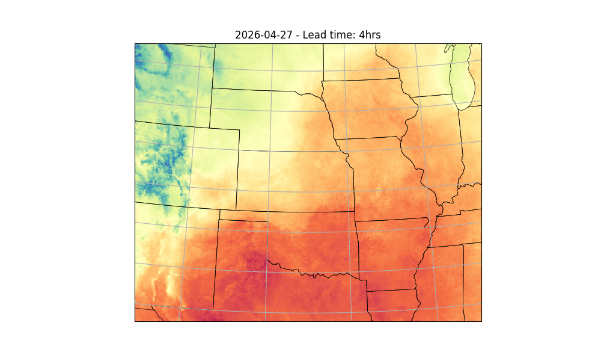

Note
Go to the end to download the full example code.
Running StormCast Inference#
Basic StormCast inference workflow.
This example will demonstrate how to run a simple inference workflow to generate a basic determinstic forecast using StormCast. For details about the stormcast model, see
# /// script
# dependencies = [
# "earth2studio[data,stormcast] @ git+https://github.com/NVIDIA/earth2studio.git",
# "cartopy",
# ]
# ///
Set Up#
All workflows inside Earth2Studio require constructed components to be
handed to them. In this example, let’s take a look at the most basic:
earth2studio.run.deterministic().
Thus, we need the following:
Prognostic Model: Use the built in StormCast Model
earth2studio.models.px.StormCast.Datasource: Pull data from the HRRR data api
earth2studio.data.HRRR.IO Backend: Let’s save the outputs into a Zarr store
earth2studio.io.ZarrBackend.
StormCast also requires a conditioning data source. We use a forecast data source here,
GFS_FX earth2studio.data.GFS_FX which is the default, but a non-forecast
data source such as ARCO could also be used with appropriate time stamps.
from datetime import datetime, timedelta
from loguru import logger
from tqdm import tqdm
logger.remove()
logger.add(lambda msg: tqdm.write(msg, end=""), colorize=True)
import os
os.makedirs("outputs", exist_ok=True)
from dotenv import load_dotenv
load_dotenv() # TODO: make common example prep function
from earth2studio.data import HRRR
from earth2studio.io import ZarrBackend
from earth2studio.models.px import StormCast
# Load the default model package which downloads the check point from NGC
# Use the default conditioning data source GFS_FX
package = StormCast.load_default_package()
model = StormCast.load_model(package)
# Create the data source
data = HRRR()
# Create the IO handler, store in memory
io = ZarrBackend()
Downloading config.json: 0%| | 0.00/40.0 [00:00<?, ?B/s]
Downloading config.json: 100%|██████████| 40.0/40.0 [00:00<00:00, 193B/s]
Downloading config.json: 100%|██████████| 40.0/40.0 [00:00<00:00, 192B/s]
Downloading model.yaml: 0%| | 0.00/2.64k [00:00<?, ?B/s]
Downloading model.yaml: 100%|██████████| 2.64k/2.64k [00:00<00:00, 13.1kB/s]
Downloading model.yaml: 100%|██████████| 2.64k/2.64k [00:00<00:00, 13.1kB/s]
Downloading StormCastUNet.0.0.mdlus: 0%| | 0.00/300M [00:00<?, ?B/s]
Downloading StormCastUNet.0.0.mdlus: 3%|▎ | 10.0M/300M [00:00<00:09, 31.2MB/s]
Downloading StormCastUNet.0.0.mdlus: 7%|▋ | 20.0M/300M [00:00<00:05, 50.5MB/s]
Downloading StormCastUNet.0.0.mdlus: 10%|█ | 30.0M/300M [00:00<00:04, 63.3MB/s]
Downloading StormCastUNet.0.0.mdlus: 13%|█▎ | 40.0M/300M [00:00<00:03, 71.0MB/s]
Downloading StormCastUNet.0.0.mdlus: 17%|█▋ | 50.0M/300M [00:00<00:03, 76.5MB/s]
Downloading StormCastUNet.0.0.mdlus: 20%|██ | 60.0M/300M [00:00<00:03, 80.8MB/s]
Downloading StormCastUNet.0.0.mdlus: 23%|██▎ | 70.0M/300M [00:01<00:02, 84.0MB/s]
Downloading StormCastUNet.0.0.mdlus: 27%|██▋ | 80.0M/300M [00:01<00:02, 85.8MB/s]
Downloading StormCastUNet.0.0.mdlus: 30%|███ | 90.0M/300M [00:01<00:02, 87.5MB/s]
Downloading StormCastUNet.0.0.mdlus: 33%|███▎ | 100M/300M [00:01<00:02, 87.3MB/s]
Downloading StormCastUNet.0.0.mdlus: 37%|███▋ | 110M/300M [00:01<00:02, 88.4MB/s]
Downloading StormCastUNet.0.0.mdlus: 40%|████ | 120M/300M [00:01<00:02, 89.2MB/s]
Downloading StormCastUNet.0.0.mdlus: 43%|████▎ | 130M/300M [00:01<00:01, 89.7MB/s]
Downloading StormCastUNet.0.0.mdlus: 47%|████▋ | 140M/300M [00:01<00:01, 89.8MB/s]
Downloading StormCastUNet.0.0.mdlus: 50%|█████ | 150M/300M [00:01<00:01, 89.1MB/s]
Downloading StormCastUNet.0.0.mdlus: 53%|█████▎ | 160M/300M [00:02<00:01, 90.4MB/s]
Downloading StormCastUNet.0.0.mdlus: 57%|█████▋ | 170M/300M [00:02<00:01, 90.4MB/s]
Downloading StormCastUNet.0.0.mdlus: 60%|██████ | 180M/300M [00:02<00:01, 90.1MB/s]
Downloading StormCastUNet.0.0.mdlus: 63%|██████▎ | 190M/300M [00:02<00:01, 90.4MB/s]
Downloading StormCastUNet.0.0.mdlus: 67%|██████▋ | 200M/300M [00:02<00:01, 90.3MB/s]
Downloading StormCastUNet.0.0.mdlus: 70%|███████ | 210M/300M [00:02<00:01, 89.3MB/s]
Downloading StormCastUNet.0.0.mdlus: 73%|███████▎ | 220M/300M [00:02<00:00, 90.5MB/s]
Downloading StormCastUNet.0.0.mdlus: 77%|███████▋ | 230M/300M [00:02<00:00, 90.2MB/s]
Downloading StormCastUNet.0.0.mdlus: 80%|████████ | 240M/300M [00:03<00:00, 90.4MB/s]
Downloading StormCastUNet.0.0.mdlus: 83%|████████▎ | 250M/300M [00:03<00:00, 90.8MB/s]
Downloading StormCastUNet.0.0.mdlus: 87%|████████▋ | 260M/300M [00:03<00:00, 90.6MB/s]
Downloading StormCastUNet.0.0.mdlus: 90%|█████████ | 270M/300M [00:03<00:00, 90.5MB/s]
Downloading StormCastUNet.0.0.mdlus: 93%|█████████▎| 280M/300M [00:03<00:00, 90.4MB/s]
Downloading StormCastUNet.0.0.mdlus: 97%|█████████▋| 290M/300M [00:03<00:00, 90.3MB/s]
Downloading StormCastUNet.0.0.mdlus: 100%|██████████| 300M/300M [00:03<00:00, 90.8MB/s]
Downloading StormCastUNet.0.0.mdlus: 100%|██████████| 300M/300M [00:03<00:00, 84.7MB/s]
Downloading EDMPrecond.0.0.mdlus: 0%| | 0.00/462M [00:00<?, ?B/s]
Downloading EDMPrecond.0.0.mdlus: 2%|▏ | 10.0M/462M [00:00<00:06, 72.7MB/s]
Downloading EDMPrecond.0.0.mdlus: 9%|▊ | 40.0M/462M [00:00<00:02, 181MB/s]
Downloading EDMPrecond.0.0.mdlus: 15%|█▌ | 70.0M/462M [00:00<00:01, 233MB/s]
Downloading EDMPrecond.0.0.mdlus: 22%|██▏ | 100M/462M [00:00<00:01, 252MB/s]
Downloading EDMPrecond.0.0.mdlus: 30%|███ | 140M/462M [00:00<00:01, 289MB/s]
Downloading EDMPrecond.0.0.mdlus: 39%|███▉ | 180M/462M [00:00<00:01, 282MB/s]
Downloading EDMPrecond.0.0.mdlus: 48%|████▊ | 220M/462M [00:00<00:00, 296MB/s]
Downloading EDMPrecond.0.0.mdlus: 54%|█████▍ | 250M/462M [00:00<00:00, 298MB/s]
Downloading EDMPrecond.0.0.mdlus: 61%|██████ | 280M/462M [00:01<00:00, 296MB/s]
Downloading EDMPrecond.0.0.mdlus: 67%|██████▋ | 310M/462M [00:01<00:00, 292MB/s]
Downloading EDMPrecond.0.0.mdlus: 74%|███████▎ | 340M/462M [00:01<00:00, 296MB/s]
Downloading EDMPrecond.0.0.mdlus: 80%|████████ | 370M/462M [00:01<00:00, 285MB/s]
Downloading EDMPrecond.0.0.mdlus: 87%|████████▋ | 400M/462M [00:01<00:00, 291MB/s]
Downloading EDMPrecond.0.0.mdlus: 93%|█████████▎| 430M/462M [00:01<00:00, 292MB/s]
Downloading EDMPrecond.0.0.mdlus: 100%|█████████▉| 460M/462M [00:01<00:00, 290MB/s]
Downloading EDMPrecond.0.0.mdlus: 100%|██████████| 462M/462M [00:01<00:00, 277MB/s]
Downloading metadata.zarr.zip: 0%| | 0.00/1.71M [00:00<?, ?B/s]
Downloading metadata.zarr.zip: 100%|██████████| 1.71M/1.71M [00:00<00:00, 15.4MB/s]
Downloading metadata.zarr.zip: 100%|██████████| 1.71M/1.71M [00:00<00:00, 15.2MB/s]
Execute the Workflow#
With all components initialized, running the workflow is a single line of Python code. Workflow will return the provided IO object back to the user, which can be used to then post process. Some have additional APIs that can be handy for post-processing or saving to file. Check the API docs for more information.
For the forecast we will predict for 4 hours
import earth2studio.run as run
nsteps = 4
today = datetime.today() - timedelta(days=1)
date = today.isoformat().split("T")[0]
io = run.deterministic([date], nsteps, model, data, io)
print(io.root.tree())
2026-04-28 22:59:44.435 | INFO | earth2studio.run:deterministic:78 - Running simple workflow!
2026-04-28 22:59:44.435 | INFO | earth2studio.run:deterministic:85 - Inference device: cuda
Fetching HRRR data: 0%| | 0/99 [00:00<?, ?it/s]
2026-04-28 22:59:45.816 | DEBUG | earth2studio.data.hrrr:fetch_array:509 - Fetching HRRR grib file: noaa-hrrr-bdp-pds/hrrr.20260427/conus/hrrr.t00z.wrfnatf00.grib2 122731547-1008493
Fetching HRRR data: 0%| | 0/99 [00:00<?, ?it/s]
2026-04-28 22:59:45.818 | DEBUG | earth2studio.data.hrrr:fetch_array:509 - Fetching HRRR grib file: noaa-hrrr-bdp-pds/hrrr.20260427/conus/hrrr.t00z.wrfnatf00.grib2 364712804-638955
Fetching HRRR data: 0%| | 0/99 [00:00<?, ?it/s]
2026-04-28 22:59:45.819 | DEBUG | earth2studio.data.hrrr:fetch_array:509 - Fetching HRRR grib file: noaa-hrrr-bdp-pds/hrrr.20260427/conus/hrrr.t00z.wrfnatf00.grib2 21242663-1368687
Fetching HRRR data: 0%| | 0/99 [00:00<?, ?it/s]
2026-04-28 22:59:45.820 | DEBUG | earth2studio.data.hrrr:fetch_array:509 - Fetching HRRR grib file: noaa-hrrr-bdp-pds/hrrr.20260427/conus/hrrr.t00z.wrfnatf00.grib2 121751355-980192
Fetching HRRR data: 0%| | 0/99 [00:00<?, ?it/s]
2026-04-28 22:59:45.821 | DEBUG | earth2studio.data.hrrr:fetch_array:509 - Fetching HRRR grib file: noaa-hrrr-bdp-pds/hrrr.20260427/conus/hrrr.t00z.wrfnatf00.grib2 64613613-1036742
Fetching HRRR data: 0%| | 0/99 [00:00<?, ?it/s]
2026-04-28 22:59:45.822 | DEBUG | earth2studio.data.hrrr:fetch_array:509 - Fetching HRRR grib file: noaa-hrrr-bdp-pds/hrrr.20260427/conus/hrrr.t00z.wrfnatf00.grib2 105590759-1410607
Fetching HRRR data: 0%| | 0/99 [00:00<?, ?it/s]
2026-04-28 22:59:45.824 | DEBUG | earth2studio.data.hrrr:fetch_array:509 - Fetching HRRR grib file: noaa-hrrr-bdp-pds/hrrr.20260427/conus/hrrr.t00z.wrfnatf00.grib2 37279890-1070875
Fetching HRRR data: 0%| | 0/99 [00:00<?, ?it/s]
2026-04-28 22:59:45.825 | DEBUG | earth2studio.data.hrrr:fetch_array:509 - Fetching HRRR grib file: noaa-hrrr-bdp-pds/hrrr.20260427/conus/hrrr.t00z.wrfnatf00.grib2 131493687-2461821
Fetching HRRR data: 0%| | 0/99 [00:00<?, ?it/s]
2026-04-28 22:59:45.827 | DEBUG | earth2studio.data.hrrr:fetch_array:509 - Fetching HRRR grib file: noaa-hrrr-bdp-pds/hrrr.20260427/conus/hrrr.t00z.wrfnatf00.grib2 145900560-2463830
Fetching HRRR data: 0%| | 0/99 [00:00<?, ?it/s]
2026-04-28 22:59:45.828 | DEBUG | earth2studio.data.hrrr:fetch_array:509 - Fetching HRRR grib file: noaa-hrrr-bdp-pds/hrrr.20260427/conus/hrrr.t00z.wrfnatf00.grib2 267084394-826297
Fetching HRRR data: 0%| | 0/99 [00:00<?, ?it/s]
2026-04-28 22:59:45.830 | DEBUG | earth2studio.data.hrrr:fetch_array:509 - Fetching HRRR grib file: noaa-hrrr-bdp-pds/hrrr.20260427/conus/hrrr.t00z.wrfnatf00.grib2 13368837-2214148
Fetching HRRR data: 0%| | 0/99 [00:00<?, ?it/s]
2026-04-28 22:59:45.831 | DEBUG | earth2studio.data.hrrr:fetch_array:509 - Fetching HRRR grib file: noaa-hrrr-bdp-pds/hrrr.20260427/conus/hrrr.t00z.wrfnatf00.grib2 150687850-965625
Fetching HRRR data: 0%| | 0/99 [00:00<?, ?it/s]
2026-04-28 22:59:45.833 | DEBUG | earth2studio.data.hrrr:fetch_array:509 - Fetching HRRR grib file: noaa-hrrr-bdp-pds/hrrr.20260427/conus/hrrr.t00z.wrfnatf00.grib2 104523204-1067555
Fetching HRRR data: 0%| | 0/99 [00:00<?, ?it/s]
2026-04-28 22:59:45.834 | DEBUG | earth2studio.data.hrrr:fetch_array:509 - Fetching HRRR grib file: noaa-hrrr-bdp-pds/hrrr.20260427/conus/hrrr.t00z.wrfnatf00.grib2 111224053-2199227
Fetching HRRR data: 0%| | 0/99 [00:00<?, ?it/s]
2026-04-28 22:59:45.836 | DEBUG | earth2studio.data.hrrr:fetch_array:509 - Fetching HRRR grib file: noaa-hrrr-bdp-pds/hrrr.20260427/conus/hrrr.t00z.wrfnatf00.grib2 77682364-997327
Fetching HRRR data: 0%| | 0/99 [00:00<?, ?it/s]
2026-04-28 22:59:45.837 | DEBUG | earth2studio.data.hrrr:fetch_array:509 - Fetching HRRR grib file: noaa-hrrr-bdp-pds/hrrr.20260427/conus/hrrr.t00z.wrfnatf00.grib2 133955508-1023976
Fetching HRRR data: 0%| | 0/99 [00:00<?, ?it/s]
2026-04-28 22:59:45.838 | DEBUG | earth2studio.data.hrrr:fetch_array:509 - Fetching HRRR grib file: noaa-hrrr-bdp-pds/hrrr.20260427/conus/hrrr.t00z.wrfnatf00.grib2 93035083-1028017
Fetching HRRR data: 0%| | 0/99 [00:00<?, ?it/s]
2026-04-28 22:59:45.839 | DEBUG | earth2studio.data.hrrr:fetch_array:509 - Fetching HRRR grib file: noaa-hrrr-bdp-pds/hrrr.20260427/conus/hrrr.t00z.wrfnatf00.grib2 44926999-2387909
Fetching HRRR data: 0%| | 0/99 [00:00<?, ?it/s]
2026-04-28 22:59:45.853 | DEBUG | earth2studio.data.hrrr:fetch_array:509 - Fetching HRRR grib file: noaa-hrrr-bdp-pds/hrrr.20260427/conus/hrrr.t00z.wrfnatf00.grib2 63589594-1024019
Fetching HRRR data: 0%| | 0/99 [00:00<?, ?it/s]
2026-04-28 22:59:45.854 | DEBUG | earth2studio.data.hrrr:fetch_array:509 - Fetching HRRR grib file: noaa-hrrr-bdp-pds/hrrr.20260427/conus/hrrr.t00z.wrfnatf00.grib2 136341160-975143
Fetching HRRR data: 0%| | 0/99 [00:00<?, ?it/s]
2026-04-28 22:59:45.855 | DEBUG | earth2studio.data.hrrr:fetch_array:509 - Fetching HRRR grib file: noaa-hrrr-bdp-pds/hrrr.20260427/conus/hrrr.t00z.wrfsfcf00.grib2 44573589-2381615
Fetching HRRR data: 0%| | 0/99 [00:00<?, ?it/s]
2026-04-28 22:59:45.856 | DEBUG | earth2studio.data.hrrr:fetch_array:509 - Fetching HRRR grib file: noaa-hrrr-bdp-pds/hrrr.20260427/conus/hrrr.t00z.wrfnatf00.grib2 317431147-1480261
Fetching HRRR data: 0%| | 0/99 [00:00<?, ?it/s]
2026-04-28 22:59:45.857 | DEBUG | earth2studio.data.hrrr:fetch_array:509 - Fetching HRRR grib file: noaa-hrrr-bdp-pds/hrrr.20260427/conus/hrrr.t00z.wrfnatf00.grib2 314904701-1860660
Fetching HRRR data: 0%| | 0/99 [00:00<?, ?it/s]
2026-04-28 22:59:45.858 | DEBUG | earth2studio.data.hrrr:fetch_array:509 - Fetching HRRR grib file: noaa-hrrr-bdp-pds/hrrr.20260427/conus/hrrr.t00z.wrfnatf00.grib2 22611350-1107046
Fetching HRRR data: 0%| | 0/99 [00:00<?, ?it/s]
2026-04-28 22:59:45.859 | DEBUG | earth2studio.data.hrrr:fetch_array:509 - Fetching HRRR grib file: noaa-hrrr-bdp-pds/hrrr.20260427/conus/hrrr.t00z.wrfnatf00.grib2 48419227-1335747
Fetching HRRR data: 0%| | 0/99 [00:00<?, ?it/s]
2026-04-28 22:59:45.860 | DEBUG | earth2studio.data.hrrr:fetch_array:509 - Fetching HRRR grib file: noaa-hrrr-bdp-pds/hrrr.20260427/conus/hrrr.t00z.wrfnatf00.grib2 87126719-2432676
Fetching HRRR data: 0%| | 0/99 [00:00<?, ?it/s]
2026-04-28 22:59:45.861 | DEBUG | earth2studio.data.hrrr:fetch_array:509 - Fetching HRRR grib file: noaa-hrrr-bdp-pds/hrrr.20260427/conus/hrrr.t00z.wrfnatf00.grib2 67997406-2210189
Fetching HRRR data: 0%| | 0/99 [00:00<?, ?it/s]
2026-04-28 22:59:45.862 | DEBUG | earth2studio.data.hrrr:fetch_array:509 - Fetching HRRR grib file: noaa-hrrr-bdp-pds/hrrr.20260427/conus/hrrr.t00z.wrfnatf00.grib2 82130289-2207339
Fetching HRRR data: 0%| | 0/99 [00:00<?, ?it/s]
2026-04-28 22:59:45.862 | DEBUG | earth2studio.data.hrrr:fetch_array:509 - Fetching HRRR grib file: noaa-hrrr-bdp-pds/hrrr.20260427/conus/hrrr.t00z.wrfnatf00.grib2 119299624-1050718
Fetching HRRR data: 0%| | 0/99 [00:00<?, ?it/s]
2026-04-28 22:59:45.863 | DEBUG | earth2studio.data.hrrr:fetch_array:509 - Fetching HRRR grib file: noaa-hrrr-bdp-pds/hrrr.20260427/conus/hrrr.t00z.wrfnatf00.grib2 173493123-2453093
Fetching HRRR data: 0%| | 0/99 [00:00<?, ?it/s]
2026-04-28 22:59:45.864 | DEBUG | earth2studio.data.hrrr:fetch_array:509 - Fetching HRRR grib file: noaa-hrrr-bdp-pds/hrrr.20260427/conus/hrrr.t00z.wrfnatf00.grib2 257987532-2185181
Fetching HRRR data: 0%| | 0/99 [00:00<?, ?it/s]
2026-04-28 22:59:45.864 | DEBUG | earth2studio.data.hrrr:fetch_array:509 - Fetching HRRR grib file: noaa-hrrr-bdp-pds/hrrr.20260427/conus/hrrr.t00z.wrfnatf00.grib2 20114064-1128599
Fetching HRRR data: 0%| | 0/99 [00:00<?, ?it/s]
2026-04-28 22:59:45.865 | DEBUG | earth2studio.data.hrrr:fetch_array:509 - Fetching HRRR grib file: noaa-hrrr-bdp-pds/hrrr.20260427/conus/hrrr.t00z.wrfnatf00.grib2 72806762-2418341
Fetching HRRR data: 0%| | 0/99 [00:00<?, ?it/s]
2026-04-28 22:59:45.865 | DEBUG | earth2studio.data.hrrr:fetch_array:509 - Fetching HRRR grib file: noaa-hrrr-bdp-pds/hrrr.20260427/conus/hrrr.t00z.wrfnatf00.grib2 206131940-918939
Fetching HRRR data: 0%| | 0/99 [00:00<?, ?it/s]
2026-04-28 22:59:45.866 | DEBUG | earth2studio.data.hrrr:fetch_array:509 - Fetching HRRR grib file: noaa-hrrr-bdp-pds/hrrr.20260427/conus/hrrr.t00z.wrfnatf00.grib2 316765361-665786
Fetching HRRR data: 0%| | 0/99 [00:00<?, ?it/s]
2026-04-28 22:59:45.866 | DEBUG | earth2studio.data.hrrr:fetch_array:509 - Fetching HRRR grib file: noaa-hrrr-bdp-pds/hrrr.20260427/conus/hrrr.t00z.wrfsfcf00.grib2 0-451306
Fetching HRRR data: 0%| | 0/99 [00:00<?, ?it/s]
2026-04-28 22:59:45.867 | DEBUG | earth2studio.data.hrrr:fetch_array:509 - Fetching HRRR grib file: noaa-hrrr-bdp-pds/hrrr.20260427/conus/hrrr.t00z.wrfnatf00.grib2 47314908-1104319
Fetching HRRR data: 0%| | 0/99 [00:00<?, ?it/s]
2026-04-28 22:59:45.867 | DEBUG | earth2studio.data.hrrr:fetch_array:509 - Fetching HRRR grib file: noaa-hrrr-bdp-pds/hrrr.20260427/conus/hrrr.t00z.wrfnatf00.grib2 58742958-2401690
Fetching HRRR data: 0%| | 0/99 [00:00<?, ?it/s]
2026-04-28 22:59:45.868 | DEBUG | earth2studio.data.hrrr:fetch_array:509 - Fetching HRRR grib file: noaa-hrrr-bdp-pds/hrrr.20260427/conus/hrrr.t00z.wrfnatf00.grib2 89559395-1074622
Fetching HRRR data: 0%| | 0/99 [00:00<?, ?it/s]
2026-04-28 22:59:45.869 | DEBUG | earth2studio.data.hrrr:fetch_array:509 - Fetching HRRR grib file: noaa-hrrr-bdp-pds/hrrr.20260427/conus/hrrr.t00z.wrfnatf00.grib2 107001366-985582
Fetching HRRR data: 0%| | 0/99 [00:00<?, ?it/s]
2026-04-28 22:59:45.869 | DEBUG | earth2studio.data.hrrr:fetch_array:509 - Fetching HRRR grib file: noaa-hrrr-bdp-pds/hrrr.20260427/conus/hrrr.t00z.wrfnatf00.grib2 366288439-836105
Fetching HRRR data: 0%| | 0/99 [00:00<?, ?it/s]
2026-04-28 22:59:45.870 | DEBUG | earth2studio.data.hrrr:fetch_array:509 - Fetching HRRR grib file: noaa-hrrr-bdp-pds/hrrr.20260427/conus/hrrr.t00z.wrfnatf00.grib2 76302827-1379537
Fetching HRRR data: 0%| | 0/99 [00:00<?, ?it/s]
2026-04-28 22:59:45.871 | DEBUG | earth2studio.data.hrrr:fetch_array:509 - Fetching HRRR grib file: noaa-hrrr-bdp-pds/hrrr.20260427/conus/hrrr.t00z.wrfnatf00.grib2 195164742-2260212
Fetching HRRR data: 0%| | 0/99 [00:00<?, ?it/s]
2026-04-28 22:59:45.871 | DEBUG | earth2studio.data.hrrr:fetch_array:509 - Fetching HRRR grib file: noaa-hrrr-bdp-pds/hrrr.20260427/conus/hrrr.t00z.wrfnatf00.grib2 151653475-1003673
Fetching HRRR data: 0%| | 0/99 [00:00<?, ?it/s]
2026-04-28 22:59:45.872 | DEBUG | earth2studio.data.hrrr:fetch_array:509 - Fetching HRRR grib file: noaa-hrrr-bdp-pds/hrrr.20260427/conus/hrrr.t00z.wrfnatf00.grib2 149365865-1321985
Fetching HRRR data: 0%| | 0/99 [00:00<?, ?it/s]
2026-04-28 22:59:45.872 | DEBUG | earth2studio.data.hrrr:fetch_array:509 - Fetching HRRR grib file: noaa-hrrr-bdp-pds/hrrr.20260427/conus/hrrr.t00z.wrfnatf00.grib2 266266842-817552
Fetching HRRR data: 0%| | 0/99 [00:00<?, ?it/s]
2026-04-28 22:59:45.873 | DEBUG | earth2studio.data.hrrr:fetch_array:509 - Fetching HRRR grib file: noaa-hrrr-bdp-pds/hrrr.20260427/conus/hrrr.t00z.wrfnatf00.grib2 107986948-1030118
Fetching HRRR data: 0%| | 0/99 [00:00<?, ?it/s]
2026-04-28 22:59:45.873 | DEBUG | earth2studio.data.hrrr:fetch_array:509 - Fetching HRRR grib file: noaa-hrrr-bdp-pds/hrrr.20260427/conus/hrrr.t00z.wrfnatf00.grib2 7785150-1413668
Fetching HRRR data: 0%| | 0/99 [00:00<?, ?it/s]
2026-04-28 22:59:45.874 | DEBUG | earth2studio.data.hrrr:fetch_array:509 - Fetching HRRR grib file: noaa-hrrr-bdp-pds/hrrr.20260427/conus/hrrr.t00z.wrfnatf00.grib2 137316303-1014647
Fetching HRRR data: 0%| | 0/99 [00:00<?, ?it/s]
2026-04-28 22:59:45.874 | DEBUG | earth2studio.data.hrrr:fetch_array:509 - Fetching HRRR grib file: noaa-hrrr-bdp-pds/hrrr.20260427/conus/hrrr.t00z.wrfsfcf00.grib2 26187981-614801
Fetching HRRR data: 0%| | 0/99 [00:00<?, ?it/s]
2026-04-28 22:59:45.875 | DEBUG | earth2studio.data.hrrr:fetch_array:509 - Fetching HRRR grib file: noaa-hrrr-bdp-pds/hrrr.20260427/conus/hrrr.t00z.wrfnatf00.grib2 61144648-1095731
Fetching HRRR data: 0%| | 0/99 [00:00<?, ?it/s]
2026-04-28 22:59:45.876 | DEBUG | earth2studio.data.hrrr:fetch_array:509 - Fetching HRRR grib file: noaa-hrrr-bdp-pds/hrrr.20260427/conus/hrrr.t00z.wrfnatf00.grib2 120350342-1401013
Fetching HRRR data: 0%| | 0/99 [00:00<?, ?it/s]
2026-04-28 22:59:45.876 | DEBUG | earth2studio.data.hrrr:fetch_array:509 - Fetching HRRR grib file: noaa-hrrr-bdp-pds/hrrr.20260427/conus/hrrr.t00z.wrfnatf00.grib2 33727008-1116551
Fetching HRRR data: 0%| | 0/99 [00:00<?, ?it/s]
2026-04-28 22:59:45.877 | DEBUG | earth2studio.data.hrrr:fetch_array:509 - Fetching HRRR grib file: noaa-hrrr-bdp-pds/hrrr.20260427/conus/hrrr.t00z.wrfnatf00.grib2 36188783-1091107
Fetching HRRR data: 0%| | 0/99 [00:00<?, ?it/s]
2026-04-28 22:59:45.877 | DEBUG | earth2studio.data.hrrr:fetch_array:509 - Fetching HRRR grib file: noaa-hrrr-bdp-pds/hrrr.20260427/conus/hrrr.t00z.wrfsfcf00.grib2 46955204-2381615
Fetching HRRR data: 0%| | 0/99 [00:00<?, ?it/s]
2026-04-28 22:59:45.878 | DEBUG | earth2studio.data.hrrr:fetch_array:509 - Fetching HRRR grib file: noaa-hrrr-bdp-pds/hrrr.20260427/conus/hrrr.t00z.wrfnatf00.grib2 367124544-805669
Fetching HRRR data: 0%| | 0/99 [00:00<?, ?it/s]
2026-04-28 22:59:45.878 | DEBUG | earth2studio.data.hrrr:fetch_array:509 - Fetching HRRR grib file: noaa-hrrr-bdp-pds/hrrr.20260427/conus/hrrr.t00z.wrfnatf00.grib2 175946216-974156
Fetching HRRR data: 0%| | 0/99 [00:00<?, ?it/s]
2026-04-28 22:59:45.879 | DEBUG | earth2studio.data.hrrr:fetch_array:509 - Fetching HRRR grib file: noaa-hrrr-bdp-pds/hrrr.20260427/conus/hrrr.t00z.wrfnatf00.grib2 179113668-963614
Fetching HRRR data: 0%| | 0/99 [00:00<?, ?it/s]
2026-04-28 22:59:45.880 | DEBUG | earth2studio.data.hrrr:fetch_array:509 - Fetching HRRR grib file: noaa-hrrr-bdp-pds/hrrr.20260427/conus/hrrr.t00z.wrfnatf00.grib2 90634017-1414865
Fetching HRRR data: 0%| | 0/99 [00:00<?, ?it/s]
2026-04-28 22:59:45.880 | DEBUG | earth2studio.data.hrrr:fetch_array:509 - Fetching HRRR grib file: noaa-hrrr-bdp-pds/hrrr.20260427/conus/hrrr.t00z.wrfnatf00.grib2 96461358-2204217
Fetching HRRR data: 0%| | 0/99 [00:00<?, ?it/s]
2026-04-28 22:59:45.881 | DEBUG | earth2studio.data.hrrr:fetch_array:509 - Fetching HRRR grib file: noaa-hrrr-bdp-pds/hrrr.20260427/conus/hrrr.t00z.wrfnatf00.grib2 126121330-2173477
Fetching HRRR data: 0%| | 0/99 [00:00<?, ?it/s]
2026-04-28 22:59:45.881 | DEBUG | earth2studio.data.hrrr:fetch_array:509 - Fetching HRRR grib file: noaa-hrrr-bdp-pds/hrrr.20260427/conus/hrrr.t00z.wrfnatf00.grib2 134979484-1361676
Fetching HRRR data: 0%| | 0/99 [00:00<?, ?it/s]
2026-04-28 22:59:45.882 | DEBUG | earth2studio.data.hrrr:fetch_array:509 - Fetching HRRR grib file: noaa-hrrr-bdp-pds/hrrr.20260427/conus/hrrr.t00z.wrfnatf00.grib2 178169837-943831
Fetching HRRR data: 0%| | 0/99 [00:00<?, ?it/s]
2026-04-28 22:59:45.882 | DEBUG | earth2studio.data.hrrr:fetch_array:509 - Fetching HRRR grib file: noaa-hrrr-bdp-pds/hrrr.20260427/conus/hrrr.t00z.wrfnatf00.grib2 50813861-1051212
Fetching HRRR data: 0%| | 0/99 [00:00<?, ?it/s]
2026-04-28 22:59:45.883 | DEBUG | earth2studio.data.hrrr:fetch_array:509 - Fetching HRRR grib file: noaa-hrrr-bdp-pds/hrrr.20260427/conus/hrrr.t00z.wrfnatf00.grib2 168385768-2095279
Fetching HRRR data: 0%| | 0/99 [00:00<?, ?it/s]
2026-04-28 22:59:45.884 | DEBUG | earth2studio.data.hrrr:fetch_array:509 - Fetching HRRR grib file: noaa-hrrr-bdp-pds/hrrr.20260427/conus/hrrr.t00z.wrfnatf00.grib2 49754974-1058887
Fetching HRRR data: 0%| | 0/99 [00:00<?, ?it/s]
2026-04-28 22:59:45.884 | DEBUG | earth2studio.data.hrrr:fetch_array:509 - Fetching HRRR grib file: noaa-hrrr-bdp-pds/hrrr.20260427/conus/hrrr.t00z.wrfnatf00.grib2 203404512-1831684
Fetching HRRR data: 0%| | 0/99 [00:00<?, ?it/s]
2026-04-28 22:59:45.885 | DEBUG | earth2studio.data.hrrr:fetch_array:509 - Fetching HRRR grib file: noaa-hrrr-bdp-pds/hrrr.20260427/conus/hrrr.t00z.wrfnatf00.grib2 202456112-948400
Fetching HRRR data: 0%| | 0/99 [00:00<?, ?it/s]
2026-04-28 22:59:45.885 | DEBUG | earth2studio.data.hrrr:fetch_array:509 - Fetching HRRR grib file: noaa-hrrr-bdp-pds/hrrr.20260427/conus/hrrr.t00z.wrfnatf00.grib2 26918098-2213196
Fetching HRRR data: 0%| | 0/99 [00:00<?, ?it/s]
2026-04-28 22:59:45.886 | DEBUG | earth2studio.data.hrrr:fetch_array:509 - Fetching HRRR grib file: noaa-hrrr-bdp-pds/hrrr.20260427/conus/hrrr.t00z.wrfnatf00.grib2 261999856-2177442
Fetching HRRR data: 0%| | 0/99 [00:00<?, ?it/s]
2026-04-28 22:59:45.886 | DEBUG | earth2studio.data.hrrr:fetch_array:509 - Fetching HRRR grib file: noaa-hrrr-bdp-pds/hrrr.20260427/conus/hrrr.t00z.wrfnatf00.grib2 319745771-827845
Fetching HRRR data: 0%| | 0/99 [00:00<?, ?it/s]
2026-04-28 22:59:45.887 | DEBUG | earth2studio.data.hrrr:fetch_array:509 - Fetching HRRR grib file: noaa-hrrr-bdp-pds/hrrr.20260427/conus/hrrr.t00z.wrfnatf00.grib2 31349856-2377152
Fetching HRRR data: 0%| | 0/99 [00:00<?, ?it/s]
2026-04-28 22:59:45.888 | DEBUG | earth2studio.data.hrrr:fetch_array:509 - Fetching HRRR grib file: noaa-hrrr-bdp-pds/hrrr.20260427/conus/hrrr.t00z.wrfnatf00.grib2 205236196-895744
Fetching HRRR data: 0%| | 0/99 [00:00<?, ?it/s]
2026-04-28 22:59:45.888 | DEBUG | earth2studio.data.hrrr:fetch_array:509 - Fetching HRRR grib file: noaa-hrrr-bdp-pds/hrrr.20260427/conus/hrrr.t00z.wrfnatf00.grib2 318911408-834363
Fetching HRRR data: 0%| | 0/99 [00:00<?, ?it/s]
2026-04-28 22:59:45.889 | DEBUG | earth2studio.data.hrrr:fetch_array:509 - Fetching HRRR grib file: noaa-hrrr-bdp-pds/hrrr.20260427/conus/hrrr.t00z.wrfnatf00.grib2 176920372-1249465
Fetching HRRR data: 0%| | 0/99 [00:00<?, ?it/s]
2026-04-28 22:59:45.889 | DEBUG | earth2studio.data.hrrr:fetch_array:509 - Fetching HRRR grib file: noaa-hrrr-bdp-pds/hrrr.20260427/conus/hrrr.t00z.wrfnatf00.grib2 116843787-2455837
Fetching HRRR data: 0%| | 0/99 [00:00<?, ?it/s]
2026-04-28 22:59:45.890 | DEBUG | earth2studio.data.hrrr:fetch_array:509 - Fetching HRRR grib file: noaa-hrrr-bdp-pds/hrrr.20260427/conus/hrrr.t00z.wrfnatf00.grib2 363265385-1447419
Fetching HRRR data: 0%| | 0/99 [00:00<?, ?it/s]
2026-04-28 22:59:45.890 | DEBUG | earth2studio.data.hrrr:fetch_array:509 - Fetching HRRR grib file: noaa-hrrr-bdp-pds/hrrr.20260427/conus/hrrr.t00z.wrfnatf00.grib2 75225103-1077724
Fetching HRRR data: 0%| | 0/99 [00:00<?, ?it/s]
2026-04-28 22:59:45.891 | DEBUG | earth2studio.data.hrrr:fetch_array:509 - Fetching HRRR grib file: noaa-hrrr-bdp-pds/hrrr.20260427/conus/hrrr.t00z.wrfnatf00.grib2 92048882-986201
Fetching HRRR data: 0%| | 0/99 [00:00<?, ?it/s]
2026-04-28 22:59:45.892 | DEBUG | earth2studio.data.hrrr:fetch_array:509 - Fetching HRRR grib file: noaa-hrrr-bdp-pds/hrrr.20260427/conus/hrrr.t00z.wrfnatf00.grib2 264989982-1276860
Fetching HRRR data: 0%| | 0/99 [00:00<?, ?it/s]
2026-04-28 22:59:45.892 | DEBUG | earth2studio.data.hrrr:fetch_array:509 - Fetching HRRR grib file: noaa-hrrr-bdp-pds/hrrr.20260427/conus/hrrr.t00z.wrfnatf00.grib2 34843559-1345224
Fetching HRRR data: 0%| | 0/99 [00:00<?, ?it/s]
2026-04-28 22:59:45.893 | DEBUG | earth2studio.data.hrrr:fetch_array:509 - Fetching HRRR grib file: noaa-hrrr-bdp-pds/hrrr.20260427/conus/hrrr.t00z.wrfnatf00.grib2 140673077-2142004
Fetching HRRR data: 0%| | 0/99 [00:00<?, ?it/s]
2026-04-28 22:59:45.893 | DEBUG | earth2studio.data.hrrr:fetch_array:509 - Fetching HRRR grib file: noaa-hrrr-bdp-pds/hrrr.20260427/conus/hrrr.t00z.wrfnatf00.grib2 6628437-1156713
Fetching HRRR data: 0%| | 0/99 [00:00<?, ?it/s]
2026-04-28 22:59:45.894 | DEBUG | earth2studio.data.hrrr:fetch_array:509 - Fetching HRRR grib file: noaa-hrrr-bdp-pds/hrrr.20260427/conus/hrrr.t00z.wrfnatf00.grib2 54072453-2211843
Fetching HRRR data: 0%| | 0/99 [00:00<?, ?it/s]
2026-04-28 22:59:45.894 | DEBUG | earth2studio.data.hrrr:fetch_array:509 - Fetching HRRR grib file: noaa-hrrr-bdp-pds/hrrr.20260427/conus/hrrr.t00z.wrfsfcf00.grib2 37507933-1232018
Fetching HRRR data: 0%| | 0/99 [00:00<?, ?it/s]
2026-04-28 22:59:45.895 | DEBUG | earth2studio.data.hrrr:fetch_array:509 - Fetching HRRR grib file: noaa-hrrr-bdp-pds/hrrr.20260427/conus/hrrr.t00z.wrfnatf00.grib2 365351759-936680
Fetching HRRR data: 0%| | 0/99 [00:00<?, ?it/s]
2026-04-28 22:59:45.896 | DEBUG | earth2studio.data.hrrr:fetch_array:509 - Fetching HRRR grib file: noaa-hrrr-bdp-pds/hrrr.20260427/conus/hrrr.t00z.wrfnatf00.grib2 40430957-2212761
Fetching HRRR data: 0%| | 0/99 [00:00<?, ?it/s]
2026-04-28 22:59:45.896 | DEBUG | earth2studio.data.hrrr:fetch_array:509 - Fetching HRRR grib file: noaa-hrrr-bdp-pds/hrrr.20260427/conus/hrrr.t00z.wrfnatf00.grib2 10303704-1064150
Fetching HRRR data: 0%| | 0/99 [00:00<?, ?it/s]
2026-04-28 22:59:45.897 | DEBUG | earth2studio.data.hrrr:fetch_array:509 - Fetching HRRR grib file: noaa-hrrr-bdp-pds/hrrr.20260427/conus/hrrr.t00z.wrfnatf00.grib2 17760390-2353674
Fetching HRRR data: 0%| | 0/99 [00:00<?, ?it/s]
2026-04-28 22:59:45.897 | DEBUG | earth2studio.data.hrrr:fetch_array:509 - Fetching HRRR grib file: noaa-hrrr-bdp-pds/hrrr.20260427/conus/hrrr.t00z.wrfnatf00.grib2 102078388-2444816
Fetching HRRR data: 0%| | 0/99 [00:00<?, ?it/s]
2026-04-28 22:59:45.898 | DEBUG | earth2studio.data.hrrr:fetch_array:509 - Fetching HRRR grib file: noaa-hrrr-bdp-pds/hrrr.20260427/conus/hrrr.t00z.wrfnatf00.grib2 78679691-1030804
Fetching HRRR data: 0%| | 0/99 [00:00<?, ?it/s]
2026-04-28 22:59:45.898 | DEBUG | earth2studio.data.hrrr:fetch_array:509 - Fetching HRRR grib file: noaa-hrrr-bdp-pds/hrrr.20260427/conus/hrrr.t00z.wrfnatf00.grib2 4357628-2270809
Fetching HRRR data: 0%| | 0/99 [00:00<?, ?it/s]
2026-04-28 22:59:45.899 | DEBUG | earth2studio.data.hrrr:fetch_array:509 - Fetching HRRR grib file: noaa-hrrr-bdp-pds/hrrr.20260427/conus/hrrr.t00z.wrfnatf00.grib2 264177298-812684
Fetching HRRR data: 0%| | 0/99 [00:00<?, ?it/s]
2026-04-28 22:59:45.900 | DEBUG | earth2studio.data.hrrr:fetch_array:509 - Fetching HRRR grib file: noaa-hrrr-bdp-pds/hrrr.20260427/conus/hrrr.t00z.wrfnatf00.grib2 0-2214787
Fetching HRRR data: 0%| | 0/99 [00:00<?, ?it/s]
2026-04-28 22:59:45.900 | DEBUG | earth2studio.data.hrrr:fetch_array:509 - Fetching HRRR grib file: noaa-hrrr-bdp-pds/hrrr.20260427/conus/hrrr.t00z.wrfnatf00.grib2 148364390-1001475
Fetching HRRR data: 0%| | 0/99 [00:00<?, ?it/s]
2026-04-28 22:59:45.901 | DEBUG | earth2studio.data.hrrr:fetch_array:509 - Fetching HRRR grib file: noaa-hrrr-bdp-pds/hrrr.20260427/conus/hrrr.t00z.wrfnatf00.grib2 23718396-1083102
Fetching HRRR data: 0%| | 0/99 [00:00<?, ?it/s]
2026-04-28 22:59:45.901 | DEBUG | earth2studio.data.hrrr:fetch_array:509 - Fetching HRRR grib file: noaa-hrrr-bdp-pds/hrrr.20260427/conus/hrrr.t00z.wrfnatf00.grib2 62240379-1349215
Fetching HRRR data: 0%| | 0/99 [00:00<?, ?it/s]
2026-04-28 22:59:45.902 | DEBUG | earth2studio.data.hrrr:fetch_array:509 - Fetching HRRR grib file: noaa-hrrr-bdp-pds/hrrr.20260427/conus/hrrr.t00z.wrfnatf00.grib2 9198818-1104886
Fetching HRRR data: 0%| | 0/99 [00:00<?, ?it/s]
2026-04-28 22:59:45.902 | DEBUG | earth2studio.data.hrrr:fetch_array:509 - Fetching HRRR grib file: noaa-hrrr-bdp-pds/hrrr.20260427/conus/hrrr.t00z.wrfnatf00.grib2 200036884-2419228
Fetching HRRR data: 0%| | 0/99 [00:00<?, ?it/s]
Fetching HRRR data: 1%| | 1/99 [00:00<00:47, 2.08it/s]
Fetching HRRR data: 2%|▏ | 2/99 [00:00<00:26, 3.66it/s]
Fetching HRRR data: 4%|▍ | 4/99 [00:00<00:14, 6.44it/s]
Fetching HRRR data: 9%|▉ | 9/99 [00:00<00:06, 13.67it/s]
Fetching HRRR data: 11%|█ | 11/99 [00:01<00:06, 13.61it/s]
Fetching HRRR data: 14%|█▍ | 14/99 [00:01<00:05, 16.04it/s]
Fetching HRRR data: 22%|██▏ | 22/99 [00:01<00:02, 27.55it/s]
Fetching HRRR data: 28%|██▊ | 28/99 [00:01<00:02, 32.64it/s]
Fetching HRRR data: 33%|███▎ | 33/99 [00:01<00:01, 35.18it/s]
Fetching HRRR data: 38%|███▊ | 38/99 [00:01<00:01, 37.13it/s]
Fetching HRRR data: 44%|████▍ | 44/99 [00:01<00:01, 38.57it/s]
Fetching HRRR data: 48%|████▊ | 48/99 [00:02<00:01, 37.53it/s]
Fetching HRRR data: 54%|█████▎ | 53/99 [00:02<00:01, 39.86it/s]
Fetching HRRR data: 61%|██████ | 60/99 [00:02<00:00, 44.64it/s]
Fetching HRRR data: 66%|██████▌ | 65/99 [00:02<00:00, 44.51it/s]
Fetching HRRR data: 71%|███████ | 70/99 [00:02<00:00, 43.36it/s]
Fetching HRRR data: 76%|███████▌ | 75/99 [00:02<00:00, 41.10it/s]
Fetching HRRR data: 81%|████████ | 80/99 [00:02<00:00, 42.28it/s]
Fetching HRRR data: 87%|████████▋ | 86/99 [00:02<00:00, 40.12it/s]
Fetching HRRR data: 93%|█████████▎| 92/99 [00:02<00:00, 44.66it/s]
Fetching HRRR data: 98%|█████████▊| 97/99 [00:03<00:00, 44.46it/s]
Fetching HRRR data: 100%|██████████| 99/99 [00:03<00:00, 30.63it/s]
2026-04-28 22:59:49.361 | SUCCESS | earth2studio.run:deterministic:109 - Fetched data from HRRR
2026-04-28 22:59:49.411 | INFO | earth2studio.run:deterministic:139 - Inference starting!
Running inference: 0%| | 0/5 [00:00<?, ?it/s]
Running inference: 20%|██ | 1/5 [00:01<00:05, 1.33s/it]
Fetching GFS data: 0%| | 0/26 [00:00<?, ?it/s]
2026-04-28 22:59:51.115 | DEBUG | earth2studio.data.gfs:fetch_array:386 - Fetching GFS grib file: noaa-gfs-bdp-pds/gfs.20260427/00/atmos/gfs.t00z.pgrb2.0p25.f000 343635380-1376662
Fetching GFS data: 0%| | 0/26 [00:00<?, ?it/s]
Running inference: 20%|██ | 1/5 [00:01<00:05, 1.33s/it]
2026-04-28 22:59:51.117 | DEBUG | earth2studio.data.gfs:fetch_array:386 - Fetching GFS grib file: noaa-gfs-bdp-pds/gfs.20260427/00/atmos/gfs.t00z.pgrb2.0p25.f000 404184342-956141
Fetching GFS data: 0%| | 0/26 [00:00<?, ?it/s]
Running inference: 20%|██ | 1/5 [00:01<00:05, 1.33s/it]
2026-04-28 22:59:51.119 | DEBUG | earth2studio.data.gfs:fetch_array:386 - Fetching GFS grib file: noaa-gfs-bdp-pds/gfs.20260427/00/atmos/gfs.t00z.pgrb2.0p25.f000 340562846-900482
Fetching GFS data: 0%| | 0/26 [00:00<?, ?it/s]
Running inference: 20%|██ | 1/5 [00:01<00:05, 1.33s/it]
2026-04-28 22:59:51.121 | DEBUG | earth2studio.data.gfs:fetch_array:386 - Fetching GFS grib file: noaa-gfs-bdp-pds/gfs.20260427/00/atmos/gfs.t00z.pgrb2.0p25.f000 215445291-597094
Fetching GFS data: 0%| | 0/26 [00:00<?, ?it/s]
Running inference: 20%|██ | 1/5 [00:01<00:05, 1.33s/it]
2026-04-28 22:59:51.123 | DEBUG | earth2studio.data.gfs:fetch_array:386 - Fetching GFS grib file: noaa-gfs-bdp-pds/gfs.20260427/00/atmos/gfs.t00z.pgrb2.0p25.f000 208702524-728538
Fetching GFS data: 0%| | 0/26 [00:00<?, ?it/s]
Running inference: 20%|██ | 1/5 [00:01<00:05, 1.33s/it]
2026-04-28 22:59:51.125 | DEBUG | earth2studio.data.gfs:fetch_array:386 - Fetching GFS grib file: noaa-gfs-bdp-pds/gfs.20260427/00/atmos/gfs.t00z.pgrb2.0p25.f000 209431062-741129
Fetching GFS data: 0%| | 0/26 [00:00<?, ?it/s]
Running inference: 20%|██ | 1/5 [00:01<00:05, 1.33s/it]
2026-04-28 22:59:51.127 | DEBUG | earth2studio.data.gfs:fetch_array:386 - Fetching GFS grib file: noaa-gfs-bdp-pds/gfs.20260427/00/atmos/gfs.t00z.pgrb2.0p25.f000 408346085-996030
Fetching GFS data: 0%| | 0/26 [00:00<?, ?it/s]
Running inference: 20%|██ | 1/5 [00:01<00:05, 1.33s/it]
2026-04-28 22:59:51.129 | DEBUG | earth2studio.data.gfs:fetch_array:386 - Fetching GFS grib file: noaa-gfs-bdp-pds/gfs.20260427/00/atmos/gfs.t00z.pgrb2.0p25.f000 348333076-955190
Fetching GFS data: 0%| | 0/26 [00:00<?, ?it/s]
Running inference: 20%|██ | 1/5 [00:01<00:05, 1.33s/it]
2026-04-28 22:59:51.131 | DEBUG | earth2studio.data.gfs:fetch_array:386 - Fetching GFS grib file: noaa-gfs-bdp-pds/gfs.20260427/00/atmos/gfs.t00z.pgrb2.0p25.f000 410419409-836085
Fetching GFS data: 0%| | 0/26 [00:00<?, ?it/s]
Running inference: 20%|██ | 1/5 [00:01<00:05, 1.33s/it]
2026-04-28 22:59:51.133 | DEBUG | earth2studio.data.gfs:fetch_array:386 - Fetching GFS grib file: noaa-gfs-bdp-pds/gfs.20260427/00/atmos/gfs.t00z.pgrb2.0p25.f000 269926212-917241
Fetching GFS data: 0%| | 0/26 [00:00<?, ?it/s]
Running inference: 20%|██ | 1/5 [00:01<00:05, 1.33s/it]
2026-04-28 22:59:51.135 | DEBUG | earth2studio.data.gfs:fetch_array:386 - Fetching GFS grib file: noaa-gfs-bdp-pds/gfs.20260427/00/atmos/gfs.t00z.pgrb2.0p25.f000 211432717-1181226
Fetching GFS data: 0%| | 0/26 [00:00<?, ?it/s]
Running inference: 20%|██ | 1/5 [00:01<00:05, 1.33s/it]
2026-04-28 22:59:51.137 | DEBUG | earth2studio.data.gfs:fetch_array:386 - Fetching GFS grib file: noaa-gfs-bdp-pds/gfs.20260427/00/atmos/gfs.t00z.pgrb2.0p25.f000 400094101-1230205
Fetching GFS data: 0%| | 0/26 [00:00<?, ?it/s]
Running inference: 20%|██ | 1/5 [00:01<00:05, 1.33s/it]
2026-04-28 22:59:51.138 | DEBUG | earth2studio.data.gfs:fetch_array:386 - Fetching GFS grib file: noaa-gfs-bdp-pds/gfs.20260427/00/atmos/gfs.t00z.pgrb2.0p25.f000 341463328-844657
Fetching GFS data: 0%| | 0/26 [00:00<?, ?it/s]
Running inference: 20%|██ | 1/5 [00:01<00:05, 1.33s/it]
2026-04-28 22:59:51.140 | DEBUG | earth2studio.data.gfs:fetch_array:386 - Fetching GFS grib file: noaa-gfs-bdp-pds/gfs.20260427/00/atmos/gfs.t00z.pgrb2.0p25.f000 264458404-723856
Fetching GFS data: 0%| | 0/26 [00:00<?, ?it/s]
Running inference: 20%|██ | 1/5 [00:01<00:05, 1.33s/it]
2026-04-28 22:59:51.142 | DEBUG | earth2studio.data.gfs:fetch_array:386 - Fetching GFS grib file: noaa-gfs-bdp-pds/gfs.20260427/00/atmos/gfs.t00z.pgrb2.0p25.f000 347391910-941166
Fetching GFS data: 0%| | 0/26 [00:00<?, ?it/s]
Running inference: 20%|██ | 1/5 [00:01<00:05, 1.33s/it]
2026-04-28 22:59:51.144 | DEBUG | earth2studio.data.gfs:fetch_array:386 - Fetching GFS grib file: noaa-gfs-bdp-pds/gfs.20260427/00/atmos/gfs.t00z.pgrb2.0p25.f000 403218474-965868
Fetching GFS data: 0%| | 0/26 [00:00<?, ?it/s]
Running inference: 20%|██ | 1/5 [00:01<00:05, 1.33s/it]
2026-04-28 22:59:51.146 | DEBUG | earth2studio.data.gfs:fetch_array:386 - Fetching GFS grib file: noaa-gfs-bdp-pds/gfs.20260427/00/atmos/gfs.t00z.pgrb2.0p25.f000 263764898-693506
Fetching GFS data: 0%| | 0/26 [00:00<?, ?it/s]
Running inference: 20%|██ | 1/5 [00:01<00:05, 1.33s/it]
2026-04-28 22:59:51.148 | DEBUG | earth2studio.data.gfs:fetch_array:386 - Fetching GFS grib file: noaa-gfs-bdp-pds/gfs.20260427/00/atmos/gfs.t00z.pgrb2.0p25.f000 266432010-1289310
Fetching GFS data: 0%| | 0/26 [00:00<?, ?it/s]
Running inference: 20%|██ | 1/5 [00:01<00:05, 1.33s/it]
2026-04-28 22:59:51.151 | DEBUG | earth2studio.data.gfs:fetch_array:386 - Fetching GFS grib file: noaa-gfs-bdp-pds/gfs.20260427/00/atmos/gfs.t00z.pgrb2.0p25.f000 430556801-1198401
Fetching GFS data: 0%| | 0/26 [00:00<?, ?it/s]
Running inference: 20%|██ | 1/5 [00:01<00:05, 1.33s/it]
2026-04-28 22:59:51.153 | DEBUG | earth2studio.data.gfs:fetch_array:386 - Fetching GFS grib file: noaa-gfs-bdp-pds/gfs.20260427/00/atmos/gfs.t00z.pgrb2.0p25.f000 423649352-948370
Fetching GFS data: 0%| | 0/26 [00:00<?, ?it/s]
Running inference: 20%|██ | 1/5 [00:01<00:05, 1.33s/it]
2026-04-28 22:59:51.154 | DEBUG | earth2studio.data.gfs:fetch_array:386 - Fetching GFS grib file: noaa-gfs-bdp-pds/gfs.20260427/00/atmos/gfs.t00z.pgrb2.0p25.f000 422685210-964142
Fetching GFS data: 0%| | 0/26 [00:00<?, ?it/s]
Running inference: 20%|██ | 1/5 [00:01<00:05, 1.33s/it]
2026-04-28 22:59:51.155 | DEBUG | earth2studio.data.gfs:fetch_array:386 - Fetching GFS grib file: noaa-gfs-bdp-pds/gfs.20260427/00/atmos/gfs.t00z.pgrb2.0p25.f000 0-1000200
Fetching GFS data: 0%| | 0/26 [00:00<?, ?it/s]
Running inference: 20%|██ | 1/5 [00:01<00:05, 1.33s/it]
2026-04-28 22:59:51.157 | DEBUG | earth2studio.data.gfs:fetch_array:386 - Fetching GFS grib file: noaa-gfs-bdp-pds/gfs.20260427/00/atmos/gfs.t00z.pgrb2.0p25.f000 270843453-923264
Fetching GFS data: 0%| | 0/26 [00:00<?, ?it/s]
Running inference: 20%|██ | 1/5 [00:01<00:05, 1.33s/it]
2026-04-28 22:59:51.158 | DEBUG | earth2studio.data.gfs:fetch_array:386 - Fetching GFS grib file: noaa-gfs-bdp-pds/gfs.20260427/00/atmos/gfs.t00z.pgrb2.0p25.f000 398208155-859728
Fetching GFS data: 0%| | 0/26 [00:00<?, ?it/s]
Running inference: 20%|██ | 1/5 [00:01<00:05, 1.33s/it]
2026-04-28 22:59:51.159 | DEBUG | earth2studio.data.gfs:fetch_array:386 - Fetching GFS grib file: noaa-gfs-bdp-pds/gfs.20260427/00/atmos/gfs.t00z.pgrb2.0p25.f000 418953666-508204
Fetching GFS data: 0%| | 0/26 [00:00<?, ?it/s]
Running inference: 20%|██ | 1/5 [00:01<00:05, 1.33s/it]
2026-04-28 22:59:51.161 | DEBUG | earth2studio.data.gfs:fetch_array:386 - Fetching GFS grib file: noaa-gfs-bdp-pds/gfs.20260427/00/atmos/gfs.t00z.pgrb2.0p25.f000 214858273-587018
Fetching GFS data: 0%| | 0/26 [00:00<?, ?it/s]
Running inference: 20%|██ | 1/5 [00:01<00:05, 1.33s/it]
Fetching GFS data: 4%|▍ | 1/26 [00:00<00:15, 1.67it/s]
Fetching GFS data: 23%|██▎ | 6/26 [00:00<00:01, 10.80it/s]
Fetching GFS data: 42%|████▏ | 11/26 [00:00<00:00, 18.51it/s]
Fetching GFS data: 58%|█████▊ | 15/26 [00:00<00:00, 19.97it/s]
Fetching GFS data: 96%|█████████▌| 25/26 [00:01<00:00, 35.58it/s]
Fetching GFS data: 100%|██████████| 26/26 [00:01<00:00, 21.03it/s]
Running inference: 40%|████ | 2/5 [00:10<00:17, 5.92s/it]
Fetching GFS data: 0%| | 0/26 [00:00<?, ?it/s]
2026-04-28 23:00:00.291 | DEBUG | earth2studio.data.gfs:fetch_array:386 - Fetching GFS grib file: noaa-gfs-bdp-pds/gfs.20260427/00/atmos/gfs.t00z.pgrb2.0p25.f001 410316588-836542
Fetching GFS data: 0%| | 0/26 [00:00<?, ?it/s]
Running inference: 40%|████ | 2/5 [00:10<00:17, 5.92s/it]
2026-04-28 23:00:00.294 | DEBUG | earth2studio.data.gfs:fetch_array:386 - Fetching GFS grib file: noaa-gfs-bdp-pds/gfs.20260427/00/atmos/gfs.t00z.pgrb2.0p25.f001 404084859-954928
Fetching GFS data: 0%| | 0/26 [00:00<?, ?it/s]
Running inference: 40%|████ | 2/5 [00:10<00:17, 5.92s/it]
2026-04-28 23:00:00.296 | DEBUG | earth2studio.data.gfs:fetch_array:386 - Fetching GFS grib file: noaa-gfs-bdp-pds/gfs.20260427/00/atmos/gfs.t00z.pgrb2.0p25.f001 263900974-719419
Fetching GFS data: 0%| | 0/26 [00:00<?, ?it/s]
Running inference: 40%|████ | 2/5 [00:10<00:17, 5.92s/it]
2026-04-28 23:00:00.298 | DEBUG | earth2studio.data.gfs:fetch_array:386 - Fetching GFS grib file: noaa-gfs-bdp-pds/gfs.20260427/00/atmos/gfs.t00z.pgrb2.0p25.f001 348155797-953725
Fetching GFS data: 0%| | 0/26 [00:00<?, ?it/s]
Running inference: 40%|████ | 2/5 [00:10<00:17, 5.92s/it]
2026-04-28 23:00:00.300 | DEBUG | earth2studio.data.gfs:fetch_array:386 - Fetching GFS grib file: noaa-gfs-bdp-pds/gfs.20260427/00/atmos/gfs.t00z.pgrb2.0p25.f001 208543724-744175
Fetching GFS data: 0%| | 0/26 [00:00<?, ?it/s]
Running inference: 40%|████ | 2/5 [00:10<00:17, 5.92s/it]
2026-04-28 23:00:00.301 | DEBUG | earth2studio.data.gfs:fetch_array:386 - Fetching GFS grib file: noaa-gfs-bdp-pds/gfs.20260427/00/atmos/gfs.t00z.pgrb2.0p25.f001 0-999376
Fetching GFS data: 0%| | 0/26 [00:00<?, ?it/s]
Running inference: 40%|████ | 2/5 [00:10<00:17, 5.92s/it]
2026-04-28 23:00:00.303 | DEBUG | earth2studio.data.gfs:fetch_array:386 - Fetching GFS grib file: noaa-gfs-bdp-pds/gfs.20260427/00/atmos/gfs.t00z.pgrb2.0p25.f001 270400265-923336
Fetching GFS data: 0%| | 0/26 [00:00<?, ?it/s]
Running inference: 40%|████ | 2/5 [00:10<00:17, 5.92s/it]
2026-04-28 23:00:00.305 | DEBUG | earth2studio.data.gfs:fetch_array:386 - Fetching GFS grib file: noaa-gfs-bdp-pds/gfs.20260427/00/atmos/gfs.t00z.pgrb2.0p25.f001 399997544-1229727
Fetching GFS data: 0%| | 0/26 [00:00<?, ?it/s]
Running inference: 40%|████ | 2/5 [00:10<00:17, 5.92s/it]
2026-04-28 23:00:00.307 | DEBUG | earth2studio.data.gfs:fetch_array:386 - Fetching GFS grib file: noaa-gfs-bdp-pds/gfs.20260427/00/atmos/gfs.t00z.pgrb2.0p25.f001 439709703-1197312
Fetching GFS data: 0%| | 0/26 [00:00<?, ?it/s]
Running inference: 40%|████ | 2/5 [00:10<00:17, 5.92s/it]
2026-04-28 23:00:00.309 | DEBUG | earth2studio.data.gfs:fetch_array:386 - Fetching GFS grib file: noaa-gfs-bdp-pds/gfs.20260427/00/atmos/gfs.t00z.pgrb2.0p25.f001 214563109-597240
Fetching GFS data: 0%| | 0/26 [00:00<?, ?it/s]
Running inference: 40%|████ | 2/5 [00:10<00:17, 5.92s/it]
2026-04-28 23:00:00.312 | DEBUG | earth2studio.data.gfs:fetch_array:386 - Fetching GFS grib file: noaa-gfs-bdp-pds/gfs.20260427/00/atmos/gfs.t00z.pgrb2.0p25.f001 343463957-1377023
Fetching GFS data: 0%| | 0/26 [00:00<?, ?it/s]
Running inference: 40%|████ | 2/5 [00:10<00:17, 5.92s/it]
2026-04-28 23:00:00.313 | DEBUG | earth2studio.data.gfs:fetch_array:386 - Fetching GFS grib file: noaa-gfs-bdp-pds/gfs.20260427/00/atmos/gfs.t00z.pgrb2.0p25.f001 408240409-995713
Fetching GFS data: 0%| | 0/26 [00:00<?, ?it/s]
Running inference: 40%|████ | 2/5 [00:10<00:17, 5.92s/it]
2026-04-28 23:00:00.315 | DEBUG | earth2studio.data.gfs:fetch_array:386 - Fetching GFS grib file: noaa-gfs-bdp-pds/gfs.20260427/00/atmos/gfs.t00z.pgrb2.0p25.f001 265866363-1288011
Fetching GFS data: 0%| | 0/26 [00:00<?, ?it/s]
Running inference: 40%|████ | 2/5 [00:10<00:17, 5.92s/it]
2026-04-28 23:00:00.317 | DEBUG | earth2studio.data.gfs:fetch_array:386 - Fetching GFS grib file: noaa-gfs-bdp-pds/gfs.20260427/00/atmos/gfs.t00z.pgrb2.0p25.f001 347216229-939568
Fetching GFS data: 0%| | 0/26 [00:00<?, ?it/s]
Running inference: 40%|████ | 2/5 [00:10<00:17, 5.92s/it]
2026-04-28 23:00:00.319 | DEBUG | earth2studio.data.gfs:fetch_array:386 - Fetching GFS grib file: noaa-gfs-bdp-pds/gfs.20260427/00/atmos/gfs.t00z.pgrb2.0p25.f001 340390813-900446
Fetching GFS data: 0%| | 0/26 [00:00<?, ?it/s]
Running inference: 40%|████ | 2/5 [00:10<00:17, 5.92s/it]
2026-04-28 23:00:00.321 | DEBUG | earth2studio.data.gfs:fetch_array:386 - Fetching GFS grib file: noaa-gfs-bdp-pds/gfs.20260427/00/atmos/gfs.t00z.pgrb2.0p25.f001 210548103-1181261
Fetching GFS data: 0%| | 0/26 [00:00<?, ?it/s]
Running inference: 40%|████ | 2/5 [00:10<00:17, 5.92s/it]
2026-04-28 23:00:00.322 | DEBUG | earth2studio.data.gfs:fetch_array:386 - Fetching GFS grib file: noaa-gfs-bdp-pds/gfs.20260427/00/atmos/gfs.t00z.pgrb2.0p25.f001 419420156-508798
Fetching GFS data: 0%| | 0/26 [00:00<?, ?it/s]
Running inference: 40%|████ | 2/5 [00:10<00:17, 5.92s/it]
2026-04-28 23:00:00.324 | DEBUG | earth2studio.data.gfs:fetch_array:386 - Fetching GFS grib file: noaa-gfs-bdp-pds/gfs.20260427/00/atmos/gfs.t00z.pgrb2.0p25.f001 424028882-963269
Fetching GFS data: 0%| | 0/26 [00:00<?, ?it/s]
Running inference: 40%|████ | 2/5 [00:10<00:17, 5.92s/it]
2026-04-28 23:00:00.326 | DEBUG | earth2studio.data.gfs:fetch_array:386 - Fetching GFS grib file: noaa-gfs-bdp-pds/gfs.20260427/00/atmos/gfs.t00z.pgrb2.0p25.f001 263207934-693040
Fetching GFS data: 0%| | 0/26 [00:00<?, ?it/s]
Running inference: 40%|████ | 2/5 [00:10<00:17, 5.92s/it]
2026-04-28 23:00:00.328 | DEBUG | earth2studio.data.gfs:fetch_array:386 - Fetching GFS grib file: noaa-gfs-bdp-pds/gfs.20260427/00/atmos/gfs.t00z.pgrb2.0p25.f001 424992151-943588
Fetching GFS data: 0%| | 0/26 [00:00<?, ?it/s]
Running inference: 40%|████ | 2/5 [00:10<00:17, 5.92s/it]
2026-04-28 23:00:00.330 | DEBUG | earth2studio.data.gfs:fetch_array:386 - Fetching GFS grib file: noaa-gfs-bdp-pds/gfs.20260427/00/atmos/gfs.t00z.pgrb2.0p25.f001 403119840-965019
Fetching GFS data: 0%| | 0/26 [00:00<?, ?it/s]
Running inference: 40%|████ | 2/5 [00:10<00:17, 5.92s/it]
2026-04-28 23:00:00.331 | DEBUG | earth2studio.data.gfs:fetch_array:386 - Fetching GFS grib file: noaa-gfs-bdp-pds/gfs.20260427/00/atmos/gfs.t00z.pgrb2.0p25.f001 207814192-729532
Fetching GFS data: 0%| | 0/26 [00:00<?, ?it/s]
Running inference: 40%|████ | 2/5 [00:10<00:17, 5.92s/it]
2026-04-28 23:00:00.332 | DEBUG | earth2studio.data.gfs:fetch_array:386 - Fetching GFS grib file: noaa-gfs-bdp-pds/gfs.20260427/00/atmos/gfs.t00z.pgrb2.0p25.f001 269483270-916995
Fetching GFS data: 0%| | 0/26 [00:00<?, ?it/s]
Running inference: 40%|████ | 2/5 [00:10<00:17, 5.92s/it]
2026-04-28 23:00:00.333 | DEBUG | earth2studio.data.gfs:fetch_array:386 - Fetching GFS grib file: noaa-gfs-bdp-pds/gfs.20260427/00/atmos/gfs.t00z.pgrb2.0p25.f001 398113165-859058
Fetching GFS data: 0%| | 0/26 [00:00<?, ?it/s]
Running inference: 40%|████ | 2/5 [00:10<00:17, 5.92s/it]
2026-04-28 23:00:00.334 | DEBUG | earth2studio.data.gfs:fetch_array:386 - Fetching GFS grib file: noaa-gfs-bdp-pds/gfs.20260427/00/atmos/gfs.t00z.pgrb2.0p25.f001 213975378-587731
Fetching GFS data: 0%| | 0/26 [00:00<?, ?it/s]
Running inference: 40%|████ | 2/5 [00:10<00:17, 5.92s/it]
2026-04-28 23:00:00.336 | DEBUG | earth2studio.data.gfs:fetch_array:386 - Fetching GFS grib file: noaa-gfs-bdp-pds/gfs.20260427/00/atmos/gfs.t00z.pgrb2.0p25.f001 341291259-844439
Fetching GFS data: 0%| | 0/26 [00:00<?, ?it/s]
Running inference: 40%|████ | 2/5 [00:10<00:17, 5.92s/it]
Fetching GFS data: 4%|▍ | 1/26 [00:00<00:12, 2.07it/s]
Fetching GFS data: 8%|▊ | 2/26 [00:00<00:06, 3.43it/s]
Fetching GFS data: 27%|██▋ | 7/26 [00:00<00:01, 12.08it/s]
Fetching GFS data: 38%|███▊ | 10/26 [00:00<00:01, 15.69it/s]
Fetching GFS data: 65%|██████▌ | 17/26 [00:01<00:00, 26.27it/s]
Fetching GFS data: 88%|████████▊ | 23/26 [00:01<00:00, 34.22it/s]
Fetching GFS data: 100%|██████████| 26/26 [00:01<00:00, 21.31it/s]
Running inference: 60%|██████ | 3/5 [00:19<00:14, 7.45s/it]
Fetching GFS data: 0%| | 0/26 [00:00<?, ?it/s]
2026-04-28 23:00:09.505 | DEBUG | earth2studio.data.gfs:fetch_array:386 - Fetching GFS grib file: noaa-gfs-bdp-pds/gfs.20260427/00/atmos/gfs.t00z.pgrb2.0p25.f002 217482622-597199
Fetching GFS data: 0%| | 0/26 [00:00<?, ?it/s]
Running inference: 60%|██████ | 3/5 [00:20<00:14, 7.45s/it]
2026-04-28 23:00:09.507 | DEBUG | earth2studio.data.gfs:fetch_array:386 - Fetching GFS grib file: noaa-gfs-bdp-pds/gfs.20260427/00/atmos/gfs.t00z.pgrb2.0p25.f002 345478920-1377499
Fetching GFS data: 0%| | 0/26 [00:00<?, ?it/s]
Running inference: 60%|██████ | 3/5 [00:20<00:14, 7.45s/it]
2026-04-28 23:00:09.508 | DEBUG | earth2studio.data.gfs:fetch_array:386 - Fetching GFS grib file: noaa-gfs-bdp-pds/gfs.20260427/00/atmos/gfs.t00z.pgrb2.0p25.f002 425784133-962584
Fetching GFS data: 0%| | 0/26 [00:00<?, ?it/s]
Running inference: 60%|██████ | 3/5 [00:20<00:14, 7.45s/it]
2026-04-28 23:00:09.509 | DEBUG | earth2studio.data.gfs:fetch_array:386 - Fetching GFS grib file: noaa-gfs-bdp-pds/gfs.20260427/00/atmos/gfs.t00z.pgrb2.0p25.f002 412070897-836891
Fetching GFS data: 0%| | 0/26 [00:00<?, ?it/s]
Running inference: 60%|██████ | 3/5 [00:20<00:14, 7.45s/it]
2026-04-28 23:00:09.510 | DEBUG | earth2studio.data.gfs:fetch_array:386 - Fetching GFS grib file: noaa-gfs-bdp-pds/gfs.20260427/00/atmos/gfs.t00z.pgrb2.0p25.f002 409995945-991835
Fetching GFS data: 0%| | 0/26 [00:00<?, ?it/s]
Running inference: 60%|██████ | 3/5 [00:20<00:14, 7.45s/it]
2026-04-28 23:00:09.511 | DEBUG | earth2studio.data.gfs:fetch_array:386 - Fetching GFS grib file: noaa-gfs-bdp-pds/gfs.20260427/00/atmos/gfs.t00z.pgrb2.0p25.f002 268500715-1283503
Fetching GFS data: 0%| | 0/26 [00:00<?, ?it/s]
Running inference: 60%|██████ | 3/5 [00:20<00:14, 7.45s/it]
2026-04-28 23:00:09.512 | DEBUG | earth2studio.data.gfs:fetch_array:386 - Fetching GFS grib file: noaa-gfs-bdp-pds/gfs.20260427/00/atmos/gfs.t00z.pgrb2.0p25.f002 349237081-938755
Fetching GFS data: 0%| | 0/26 [00:00<?, ?it/s]
Running inference: 60%|██████ | 3/5 [00:20<00:14, 7.45s/it]
2026-04-28 23:00:09.513 | DEBUG | earth2studio.data.gfs:fetch_array:386 - Fetching GFS grib file: noaa-gfs-bdp-pds/gfs.20260427/00/atmos/gfs.t00z.pgrb2.0p25.f002 342402625-900667
Fetching GFS data: 0%| | 0/26 [00:00<?, ?it/s]
Running inference: 60%|██████ | 3/5 [00:20<00:14, 7.45s/it]
2026-04-28 23:00:09.514 | DEBUG | earth2studio.data.gfs:fetch_array:386 - Fetching GFS grib file: noaa-gfs-bdp-pds/gfs.20260427/00/atmos/gfs.t00z.pgrb2.0p25.f002 213589715-1181253
Fetching GFS data: 0%| | 0/26 [00:00<?, ?it/s]
Running inference: 60%|██████ | 3/5 [00:20<00:14, 7.45s/it]
2026-04-28 23:00:09.515 | DEBUG | earth2studio.data.gfs:fetch_array:386 - Fetching GFS grib file: noaa-gfs-bdp-pds/gfs.20260427/00/atmos/gfs.t00z.pgrb2.0p25.f002 265849568-688822
Fetching GFS data: 0%| | 0/26 [00:00<?, ?it/s]
Running inference: 60%|██████ | 3/5 [00:20<00:14, 7.45s/it]
2026-04-28 23:00:09.517 | DEBUG | earth2studio.data.gfs:fetch_array:386 - Fetching GFS grib file: noaa-gfs-bdp-pds/gfs.20260427/00/atmos/gfs.t00z.pgrb2.0p25.f002 441392460-1197525
Fetching GFS data: 0%| | 0/26 [00:00<?, ?it/s]
Running inference: 60%|██████ | 3/5 [00:20<00:14, 7.45s/it]
2026-04-28 23:00:09.518 | DEBUG | earth2studio.data.gfs:fetch_array:386 - Fetching GFS grib file: noaa-gfs-bdp-pds/gfs.20260427/00/atmos/gfs.t00z.pgrb2.0p25.f002 0-996261
Fetching GFS data: 0%| | 0/26 [00:00<?, ?it/s]
Running inference: 60%|██████ | 3/5 [00:20<00:14, 7.45s/it]
2026-04-28 23:00:09.519 | DEBUG | earth2studio.data.gfs:fetch_array:386 - Fetching GFS grib file: noaa-gfs-bdp-pds/gfs.20260427/00/atmos/gfs.t00z.pgrb2.0p25.f002 210860299-728905
Fetching GFS data: 0%| | 0/26 [00:00<?, ?it/s]
Running inference: 60%|██████ | 3/5 [00:20<00:14, 7.45s/it]
2026-04-28 23:00:09.520 | DEBUG | earth2studio.data.gfs:fetch_array:386 - Fetching GFS grib file: noaa-gfs-bdp-pds/gfs.20260427/00/atmos/gfs.t00z.pgrb2.0p25.f002 271987134-917516
Fetching GFS data: 0%| | 0/26 [00:00<?, ?it/s]
Running inference: 60%|██████ | 3/5 [00:20<00:14, 7.45s/it]
2026-04-28 23:00:09.521 | DEBUG | earth2studio.data.gfs:fetch_array:386 - Fetching GFS grib file: noaa-gfs-bdp-pds/gfs.20260427/00/atmos/gfs.t00z.pgrb2.0p25.f002 399867970-858528
Fetching GFS data: 0%| | 0/26 [00:00<?, ?it/s]
Running inference: 60%|██████ | 3/5 [00:20<00:14, 7.45s/it]
2026-04-28 23:00:09.522 | DEBUG | earth2studio.data.gfs:fetch_array:386 - Fetching GFS grib file: noaa-gfs-bdp-pds/gfs.20260427/00/atmos/gfs.t00z.pgrb2.0p25.f002 216894835-587787
Fetching GFS data: 0%| | 0/26 [00:00<?, ?it/s]
Running inference: 60%|██████ | 3/5 [00:20<00:14, 7.45s/it]
2026-04-28 23:00:09.523 | DEBUG | earth2studio.data.gfs:fetch_array:386 - Fetching GFS grib file: noaa-gfs-bdp-pds/gfs.20260427/00/atmos/gfs.t00z.pgrb2.0p25.f002 343303292-845782
Fetching GFS data: 0%| | 0/26 [00:00<?, ?it/s]
Running inference: 60%|██████ | 3/5 [00:20<00:14, 7.45s/it]
2026-04-28 23:00:09.524 | DEBUG | earth2studio.data.gfs:fetch_array:386 - Fetching GFS grib file: noaa-gfs-bdp-pds/gfs.20260427/00/atmos/gfs.t00z.pgrb2.0p25.f002 405839261-954921
Fetching GFS data: 0%| | 0/26 [00:00<?, ?it/s]
Running inference: 60%|██████ | 3/5 [00:20<00:14, 7.45s/it]
2026-04-28 23:00:09.525 | DEBUG | earth2studio.data.gfs:fetch_array:386 - Fetching GFS grib file: noaa-gfs-bdp-pds/gfs.20260427/00/atmos/gfs.t00z.pgrb2.0p25.f002 266538390-719306
Fetching GFS data: 0%| | 0/26 [00:00<?, ?it/s]
Running inference: 60%|██████ | 3/5 [00:20<00:14, 7.45s/it]
2026-04-28 23:00:09.526 | DEBUG | earth2studio.data.gfs:fetch_array:386 - Fetching GFS grib file: noaa-gfs-bdp-pds/gfs.20260427/00/atmos/gfs.t00z.pgrb2.0p25.f002 404875156-964105
Fetching GFS data: 0%| | 0/26 [00:00<?, ?it/s]
Running inference: 60%|██████ | 3/5 [00:20<00:14, 7.45s/it]
2026-04-28 23:00:09.527 | DEBUG | earth2studio.data.gfs:fetch_array:386 - Fetching GFS grib file: noaa-gfs-bdp-pds/gfs.20260427/00/atmos/gfs.t00z.pgrb2.0p25.f002 350175836-952450
Fetching GFS data: 0%| | 0/26 [00:00<?, ?it/s]
Running inference: 60%|██████ | 3/5 [00:20<00:14, 7.45s/it]
2026-04-28 23:00:09.528 | DEBUG | earth2studio.data.gfs:fetch_array:386 - Fetching GFS grib file: noaa-gfs-bdp-pds/gfs.20260427/00/atmos/gfs.t00z.pgrb2.0p25.f002 211589204-740868
Fetching GFS data: 0%| | 0/26 [00:00<?, ?it/s]
Running inference: 60%|██████ | 3/5 [00:20<00:14, 7.45s/it]
2026-04-28 23:00:09.529 | DEBUG | earth2studio.data.gfs:fetch_array:386 - Fetching GFS grib file: noaa-gfs-bdp-pds/gfs.20260427/00/atmos/gfs.t00z.pgrb2.0p25.f002 421178627-510366
Fetching GFS data: 0%| | 0/26 [00:00<?, ?it/s]
Running inference: 60%|██████ | 3/5 [00:20<00:14, 7.45s/it]
2026-04-28 23:00:09.530 | DEBUG | earth2studio.data.gfs:fetch_array:386 - Fetching GFS grib file: noaa-gfs-bdp-pds/gfs.20260427/00/atmos/gfs.t00z.pgrb2.0p25.f002 426746717-943553
Fetching GFS data: 0%| | 0/26 [00:00<?, ?it/s]
Running inference: 60%|██████ | 3/5 [00:20<00:14, 7.45s/it]
2026-04-28 23:00:09.531 | DEBUG | earth2studio.data.gfs:fetch_array:386 - Fetching GFS grib file: noaa-gfs-bdp-pds/gfs.20260427/00/atmos/gfs.t00z.pgrb2.0p25.f002 272904650-922321
Fetching GFS data: 0%| | 0/26 [00:00<?, ?it/s]
Running inference: 60%|██████ | 3/5 [00:20<00:14, 7.45s/it]
2026-04-28 23:00:09.532 | DEBUG | earth2studio.data.gfs:fetch_array:386 - Fetching GFS grib file: noaa-gfs-bdp-pds/gfs.20260427/00/atmos/gfs.t00z.pgrb2.0p25.f002 401752672-1229624
Fetching GFS data: 0%| | 0/26 [00:00<?, ?it/s]
Running inference: 60%|██████ | 3/5 [00:20<00:14, 7.45s/it]
Fetching GFS data: 4%|▍ | 1/26 [00:00<00:10, 2.39it/s]
Fetching GFS data: 8%|▊ | 2/26 [00:00<00:07, 3.19it/s]
Fetching GFS data: 27%|██▋ | 7/26 [00:00<00:01, 11.95it/s]
Fetching GFS data: 46%|████▌ | 12/26 [00:00<00:00, 19.70it/s]
Fetching GFS data: 77%|███████▋ | 20/26 [00:01<00:00, 32.41it/s]
Fetching GFS data: 100%|██████████| 26/26 [00:01<00:00, 38.36it/s]
Fetching GFS data: 100%|██████████| 26/26 [00:01<00:00, 22.82it/s]
Running inference: 80%|████████ | 4/5 [00:28<00:08, 8.15s/it]
Fetching GFS data: 0%| | 0/26 [00:00<?, ?it/s]
2026-04-28 23:00:18.730 | DEBUG | earth2studio.data.gfs:fetch_array:386 - Fetching GFS grib file: noaa-gfs-bdp-pds/gfs.20260427/00/atmos/gfs.t00z.pgrb2.0p25.f003 425502406-963205
Fetching GFS data: 0%| | 0/26 [00:00<?, ?it/s]
Running inference: 80%|████████ | 4/5 [00:29<00:08, 8.15s/it]
2026-04-28 23:00:18.733 | DEBUG | earth2studio.data.gfs:fetch_array:386 - Fetching GFS grib file: noaa-gfs-bdp-pds/gfs.20260427/00/atmos/gfs.t00z.pgrb2.0p25.f003 0-997395
Fetching GFS data: 0%| | 0/26 [00:00<?, ?it/s]
Running inference: 80%|████████ | 4/5 [00:29<00:08, 8.15s/it]
2026-04-28 23:00:18.735 | DEBUG | earth2studio.data.gfs:fetch_array:386 - Fetching GFS grib file: noaa-gfs-bdp-pds/gfs.20260427/00/atmos/gfs.t00z.pgrb2.0p25.f003 272139220-922170
Fetching GFS data: 0%| | 0/26 [00:00<?, ?it/s]
Running inference: 80%|████████ | 4/5 [00:29<00:08, 8.15s/it]
2026-04-28 23:00:18.737 | DEBUG | earth2studio.data.gfs:fetch_array:386 - Fetching GFS grib file: noaa-gfs-bdp-pds/gfs.20260427/00/atmos/gfs.t00z.pgrb2.0p25.f003 401519158-1230261
Fetching GFS data: 0%| | 0/26 [00:00<?, ?it/s]
Running inference: 80%|████████ | 4/5 [00:29<00:08, 8.15s/it]
2026-04-28 23:00:18.739 | DEBUG | earth2studio.data.gfs:fetch_array:386 - Fetching GFS grib file: noaa-gfs-bdp-pds/gfs.20260427/00/atmos/gfs.t00z.pgrb2.0p25.f003 441574717-1196958
Fetching GFS data: 0%| | 0/26 [00:00<?, ?it/s]
Running inference: 80%|████████ | 4/5 [00:29<00:08, 8.15s/it]
2026-04-28 23:00:18.740 | DEBUG | earth2studio.data.gfs:fetch_array:386 - Fetching GFS grib file: noaa-gfs-bdp-pds/gfs.20260427/00/atmos/gfs.t00z.pgrb2.0p25.f003 218310733-597557
Fetching GFS data: 0%| | 0/26 [00:00<?, ?it/s]
Running inference: 80%|████████ | 4/5 [00:29<00:08, 8.15s/it]
2026-04-28 23:00:18.742 | DEBUG | earth2studio.data.gfs:fetch_array:386 - Fetching GFS grib file: noaa-gfs-bdp-pds/gfs.20260427/00/atmos/gfs.t00z.pgrb2.0p25.f003 345325126-1376591
Fetching GFS data: 0%| | 0/26 [00:00<?, ?it/s]
Running inference: 80%|████████ | 4/5 [00:29<00:08, 8.15s/it]
2026-04-28 23:00:18.744 | DEBUG | earth2studio.data.gfs:fetch_array:386 - Fetching GFS grib file: noaa-gfs-bdp-pds/gfs.20260427/00/atmos/gfs.t00z.pgrb2.0p25.f003 409747791-992984
Fetching GFS data: 0%| | 0/26 [00:00<?, ?it/s]
Running inference: 80%|████████ | 4/5 [00:29<00:08, 8.15s/it]
2026-04-28 23:00:18.746 | DEBUG | earth2studio.data.gfs:fetch_array:386 - Fetching GFS grib file: noaa-gfs-bdp-pds/gfs.20260427/00/atmos/gfs.t00z.pgrb2.0p25.f003 267736753-1282639
Fetching GFS data: 0%| | 0/26 [00:00<?, ?it/s]
Running inference: 80%|████████ | 4/5 [00:29<00:08, 8.15s/it]
2026-04-28 23:00:18.748 | DEBUG | earth2studio.data.gfs:fetch_array:386 - Fetching GFS grib file: noaa-gfs-bdp-pds/gfs.20260427/00/atmos/gfs.t00z.pgrb2.0p25.f003 349082895-937875
Fetching GFS data: 0%| | 0/26 [00:00<?, ?it/s]
Running inference: 80%|████████ | 4/5 [00:29<00:08, 8.15s/it]
2026-04-28 23:00:18.751 | DEBUG | earth2studio.data.gfs:fetch_array:386 - Fetching GFS grib file: noaa-gfs-bdp-pds/gfs.20260427/00/atmos/gfs.t00z.pgrb2.0p25.f003 342248495-901667
Fetching GFS data: 0%| | 0/26 [00:00<?, ?it/s]
Running inference: 80%|████████ | 4/5 [00:29<00:08, 8.15s/it]
2026-04-28 23:00:18.752 | DEBUG | earth2studio.data.gfs:fetch_array:386 - Fetching GFS grib file: noaa-gfs-bdp-pds/gfs.20260427/00/atmos/gfs.t00z.pgrb2.0p25.f003 214292495-1182159
Fetching GFS data: 0%| | 0/26 [00:00<?, ?it/s]
Running inference: 80%|████████ | 4/5 [00:29<00:08, 8.15s/it]
2026-04-28 23:00:18.754 | DEBUG | earth2studio.data.gfs:fetch_array:386 - Fetching GFS grib file: noaa-gfs-bdp-pds/gfs.20260427/00/atmos/gfs.t00z.pgrb2.0p25.f003 420894179-511738
Fetching GFS data: 0%| | 0/26 [00:00<?, ?it/s]
Running inference: 80%|████████ | 4/5 [00:29<00:08, 8.15s/it]
2026-04-28 23:00:18.756 | DEBUG | earth2studio.data.gfs:fetch_array:386 - Fetching GFS grib file: noaa-gfs-bdp-pds/gfs.20260427/00/atmos/gfs.t00z.pgrb2.0p25.f003 265082936-692422
Fetching GFS data: 0%| | 0/26 [00:00<?, ?it/s]
Running inference: 80%|████████ | 4/5 [00:29<00:08, 8.15s/it]
2026-04-28 23:00:18.758 | DEBUG | earth2studio.data.gfs:fetch_array:386 - Fetching GFS grib file: noaa-gfs-bdp-pds/gfs.20260427/00/atmos/gfs.t00z.pgrb2.0p25.f003 404644019-964592
Fetching GFS data: 0%| | 0/26 [00:00<?, ?it/s]
Running inference: 80%|████████ | 4/5 [00:29<00:08, 8.15s/it]
2026-04-28 23:00:18.759 | DEBUG | earth2studio.data.gfs:fetch_array:386 - Fetching GFS grib file: noaa-gfs-bdp-pds/gfs.20260427/00/atmos/gfs.t00z.pgrb2.0p25.f003 211558416-725572
Fetching GFS data: 0%| | 0/26 [00:00<?, ?it/s]
Running inference: 80%|████████ | 4/5 [00:29<00:08, 8.15s/it]
2026-04-28 23:00:18.761 | DEBUG | earth2studio.data.gfs:fetch_array:386 - Fetching GFS grib file: noaa-gfs-bdp-pds/gfs.20260427/00/atmos/gfs.t00z.pgrb2.0p25.f003 271222560-916660
Fetching GFS data: 0%| | 0/26 [00:00<?, ?it/s]
Running inference: 80%|████████ | 4/5 [00:29<00:08, 8.15s/it]
2026-04-28 23:00:18.763 | DEBUG | earth2studio.data.gfs:fetch_array:386 - Fetching GFS grib file: noaa-gfs-bdp-pds/gfs.20260427/00/atmos/gfs.t00z.pgrb2.0p25.f003 399632135-858415
Fetching GFS data: 0%| | 0/26 [00:00<?, ?it/s]
Running inference: 80%|████████ | 4/5 [00:29<00:08, 8.15s/it]
2026-04-28 23:00:18.765 | DEBUG | earth2studio.data.gfs:fetch_array:386 - Fetching GFS grib file: noaa-gfs-bdp-pds/gfs.20260427/00/atmos/gfs.t00z.pgrb2.0p25.f003 217722476-588257
Fetching GFS data: 0%| | 0/26 [00:00<?, ?it/s]
Running inference: 80%|████████ | 4/5 [00:29<00:08, 8.15s/it]
2026-04-28 23:00:18.767 | DEBUG | earth2studio.data.gfs:fetch_array:386 - Fetching GFS grib file: noaa-gfs-bdp-pds/gfs.20260427/00/atmos/gfs.t00z.pgrb2.0p25.f003 426465611-947539
Fetching GFS data: 0%| | 0/26 [00:00<?, ?it/s]
Running inference: 80%|████████ | 4/5 [00:29<00:08, 8.15s/it]
2026-04-28 23:00:18.768 | DEBUG | earth2studio.data.gfs:fetch_array:386 - Fetching GFS grib file: noaa-gfs-bdp-pds/gfs.20260427/00/atmos/gfs.t00z.pgrb2.0p25.f003 343150162-842394
Fetching GFS data: 0%| | 0/26 [00:00<?, ?it/s]
Running inference: 80%|████████ | 4/5 [00:29<00:08, 8.15s/it]
2026-04-28 23:00:18.769 | DEBUG | earth2studio.data.gfs:fetch_array:386 - Fetching GFS grib file: noaa-gfs-bdp-pds/gfs.20260427/00/atmos/gfs.t00z.pgrb2.0p25.f003 411824595-837401
Fetching GFS data: 0%| | 0/26 [00:00<?, ?it/s]
Running inference: 80%|████████ | 4/5 [00:29<00:08, 8.15s/it]
2026-04-28 23:00:18.770 | DEBUG | earth2studio.data.gfs:fetch_array:386 - Fetching GFS grib file: noaa-gfs-bdp-pds/gfs.20260427/00/atmos/gfs.t00z.pgrb2.0p25.f003 405608611-954527
Fetching GFS data: 0%| | 0/26 [00:00<?, ?it/s]
Running inference: 80%|████████ | 4/5 [00:29<00:08, 8.15s/it]
2026-04-28 23:00:18.772 | DEBUG | earth2studio.data.gfs:fetch_array:386 - Fetching GFS grib file: noaa-gfs-bdp-pds/gfs.20260427/00/atmos/gfs.t00z.pgrb2.0p25.f003 265775358-718957
Fetching GFS data: 0%| | 0/26 [00:00<?, ?it/s]
Running inference: 80%|████████ | 4/5 [00:29<00:08, 8.15s/it]
2026-04-28 23:00:18.773 | DEBUG | earth2studio.data.gfs:fetch_array:386 - Fetching GFS grib file: noaa-gfs-bdp-pds/gfs.20260427/00/atmos/gfs.t00z.pgrb2.0p25.f003 350020770-952002
Fetching GFS data: 0%| | 0/26 [00:00<?, ?it/s]
Running inference: 80%|████████ | 4/5 [00:29<00:08, 8.15s/it]
2026-04-28 23:00:18.774 | DEBUG | earth2studio.data.gfs:fetch_array:386 - Fetching GFS grib file: noaa-gfs-bdp-pds/gfs.20260427/00/atmos/gfs.t00z.pgrb2.0p25.f003 212283988-742114
Fetching GFS data: 0%| | 0/26 [00:00<?, ?it/s]
Running inference: 80%|████████ | 4/5 [00:29<00:08, 8.15s/it]
Fetching GFS data: 4%|▍ | 1/26 [00:00<00:12, 1.95it/s]
Fetching GFS data: 8%|▊ | 2/26 [00:00<00:06, 3.55it/s]
Fetching GFS data: 19%|█▉ | 5/26 [00:00<00:02, 9.54it/s]
Fetching GFS data: 38%|███▊ | 10/26 [00:00<00:00, 18.87it/s]
Fetching GFS data: 62%|██████▏ | 16/26 [00:00<00:00, 28.87it/s]
Fetching GFS data: 88%|████████▊ | 23/26 [00:01<00:00, 32.41it/s]
Fetching GFS data: 100%|██████████| 26/26 [00:01<00:00, 17.40it/s]
Running inference: 100%|██████████| 5/5 [00:38<00:00, 8.64s/it]
Running inference: 100%|██████████| 5/5 [00:38<00:00, 7.69s/it]
2026-04-28 23:00:27.881 | SUCCESS | earth2studio.run:deterministic:151 -
Inference complete
/
├── Z10hl (1, 5, 512, 640) float32
├── Z11hl (1, 5, 512, 640) float32
├── Z13hl (1, 5, 512, 640) float32
├── Z15hl (1, 5, 512, 640) float32
├── Z1hl (1, 5, 512, 640) float32
├── Z20hl (1, 5, 512, 640) float32
├── Z25hl (1, 5, 512, 640) float32
├── Z2hl (1, 5, 512, 640) float32
├── Z30hl (1, 5, 512, 640) float32
├── Z3hl (1, 5, 512, 640) float32
├── Z4hl (1, 5, 512, 640) float32
├── Z5hl (1, 5, 512, 640) float32
├── Z6hl (1, 5, 512, 640) float32
├── Z7hl (1, 5, 512, 640) float32
├── Z8hl (1, 5, 512, 640) float32
├── Z9hl (1, 5, 512, 640) float32
├── hrrr_x (640,) float64
├── hrrr_y (512,) float64
├── lead_time (5,) timedelta64
├── mslp (1, 5, 512, 640) float32
├── p10hl (1, 5, 512, 640) float32
├── p11hl (1, 5, 512, 640) float32
├── p13hl (1, 5, 512, 640) float32
├── p15hl (1, 5, 512, 640) float32
├── p1hl (1, 5, 512, 640) float32
├── p20hl (1, 5, 512, 640) float32
├── p2hl (1, 5, 512, 640) float32
├── p3hl (1, 5, 512, 640) float32
├── p4hl (1, 5, 512, 640) float32
├── p5hl (1, 5, 512, 640) float32
├── p6hl (1, 5, 512, 640) float32
├── p7hl (1, 5, 512, 640) float32
├── p8hl (1, 5, 512, 640) float32
├── p9hl (1, 5, 512, 640) float32
├── q10hl (1, 5, 512, 640) float32
├── q11hl (1, 5, 512, 640) float32
├── q13hl (1, 5, 512, 640) float32
├── q15hl (1, 5, 512, 640) float32
├── q1hl (1, 5, 512, 640) float32
├── q20hl (1, 5, 512, 640) float32
├── q25hl (1, 5, 512, 640) float32
├── q2hl (1, 5, 512, 640) float32
├── q30hl (1, 5, 512, 640) float32
├── q3hl (1, 5, 512, 640) float32
├── q4hl (1, 5, 512, 640) float32
├── q5hl (1, 5, 512, 640) float32
├── q6hl (1, 5, 512, 640) float32
├── q7hl (1, 5, 512, 640) float32
├── q8hl (1, 5, 512, 640) float32
├── q9hl (1, 5, 512, 640) float32
├── refc (1, 5, 512, 640) float32
├── t10hl (1, 5, 512, 640) float32
├── t11hl (1, 5, 512, 640) float32
├── t13hl (1, 5, 512, 640) float32
├── t15hl (1, 5, 512, 640) float32
├── t1hl (1, 5, 512, 640) float32
├── t20hl (1, 5, 512, 640) float32
├── t25hl (1, 5, 512, 640) float32
├── t2hl (1, 5, 512, 640) float32
├── t2m (1, 5, 512, 640) float32
├── t30hl (1, 5, 512, 640) float32
├── t3hl (1, 5, 512, 640) float32
├── t4hl (1, 5, 512, 640) float32
├── t5hl (1, 5, 512, 640) float32
├── t6hl (1, 5, 512, 640) float32
├── t7hl (1, 5, 512, 640) float32
├── t8hl (1, 5, 512, 640) float32
├── t9hl (1, 5, 512, 640) float32
├── time (1,) datetime64
├── u10hl (1, 5, 512, 640) float32
├── u10m (1, 5, 512, 640) float32
├── u11hl (1, 5, 512, 640) float32
├── u13hl (1, 5, 512, 640) float32
├── u15hl (1, 5, 512, 640) float32
├── u1hl (1, 5, 512, 640) float32
├── u20hl (1, 5, 512, 640) float32
├── u25hl (1, 5, 512, 640) float32
├── u2hl (1, 5, 512, 640) float32
├── u30hl (1, 5, 512, 640) float32
├── u3hl (1, 5, 512, 640) float32
├── u4hl (1, 5, 512, 640) float32
├── u5hl (1, 5, 512, 640) float32
├── u6hl (1, 5, 512, 640) float32
├── u7hl (1, 5, 512, 640) float32
├── u8hl (1, 5, 512, 640) float32
├── u9hl (1, 5, 512, 640) float32
├── v10hl (1, 5, 512, 640) float32
├── v10m (1, 5, 512, 640) float32
├── v11hl (1, 5, 512, 640) float32
├── v13hl (1, 5, 512, 640) float32
├── v15hl (1, 5, 512, 640) float32
├── v1hl (1, 5, 512, 640) float32
├── v20hl (1, 5, 512, 640) float32
├── v25hl (1, 5, 512, 640) float32
├── v2hl (1, 5, 512, 640) float32
├── v30hl (1, 5, 512, 640) float32
├── v3hl (1, 5, 512, 640) float32
├── v4hl (1, 5, 512, 640) float32
├── v5hl (1, 5, 512, 640) float32
├── v6hl (1, 5, 512, 640) float32
├── v7hl (1, 5, 512, 640) float32
├── v8hl (1, 5, 512, 640) float32
└── v9hl (1, 5, 512, 640) float32
Post Processing#
The last step is to post process our results. Cartopy is a great library for plotting fields on projections of a sphere. Here we will just plot the temperature at 2 meters (t2m) 4 hours into the forecast.
Notice that the Zarr IO function has additional APIs to interact with the stored data.
import cartopy
import cartopy.crs as ccrs
import matplotlib.pyplot as plt
forecast = f"{date}"
variable = "t2m"
step = 4 # lead time = 1 hr
plt.close("all")
# Create a correct Lambert Conformal projection
projection = ccrs.LambertConformal(
central_longitude=262.5,
central_latitude=38.5,
standard_parallels=(38.5, 38.5),
globe=ccrs.Globe(semimajor_axis=6371229, semiminor_axis=6371229),
)
# Create a figure and axes with the specified projection
fig, ax = plt.subplots(subplot_kw={"projection": projection}, figsize=(10, 6))
# Plot the field using pcolormesh
im = ax.pcolormesh(
model.lon,
model.lat,
io[variable][0, step],
transform=ccrs.PlateCarree(),
cmap="Spectral_r",
)
# Set state lines
ax.add_feature(
cartopy.feature.STATES.with_scale("50m"), linewidth=0.5, edgecolor="black", zorder=2
)
# Set title
ax.set_title(f"{forecast} - Lead time: {step}hrs")
# Add coastlines and gridlines
ax.coastlines()
ax.gridlines()
plt.savefig(f"outputs/09_{date}_t2m_prediction.jpg")

Total running time of the script: (0 minutes 54.058 seconds)